Summary
Key findings
- GOFEE (Gaussian-process surrogate search) ranks first (score 82.7, 95% CI [81.3, 84.2], first in 100% of bootstrap replicates), followed by Online-surrogate pre-relaxation BH (78.5) and Adaptive memetic algorithm (GA + BH chains) (68.4).
- Best new algorithm Online-surrogate pre-relaxation BH vs best baseline GOFEE (Gaussian-process surrogate search): 1.34× more ionic steps per global-minimum discovery (geometric mean over the 39 benchmarks solved by both).
- 0 of 10 new algorithms score higher than every baseline.
- Basin hopping (literature settings) ranks 15 of 22; the top algorithm is 5.44× as efficient as BH (geometric mean of the ERT ratio over the benchmarks solved by both).
- Category winners: clusters – GOFEE (Gaussian-process surrogate search) (83); surfaces – GOFEE (Gaussian-process surrogate search) (96); zeolites – GOFEE (Gaussian-process surrogate search) (95); bulks – Symmetry-seeded search (90).
- Most robust: Online-surrogate pre-relaxation BH found the global minimum in 93% of all runs and on 39/39 benchmarks.
- Measured in wall-clock time instead of ionic steps, the best algorithm is Adaptive operator selection basin hopping (score 84.3).
- Hardest benchmarks: ze_Pt9_MOR (solved by 18/22), cl_Ag27Cu7 (solved by 20/22), cl_Cu38 (solved by 20/22).
Notes on interpretation
- Runs and cost. “50 runs” means 50 independent random seeds per algorithm and benchmark, each with the full ionic-step budget of the benchmark. Efficiency is measured per ionic step (one NEP89 energy+force evaluation of the whole system), not per second; a wall-clock score is given separately. Every run used one CPU core of a 5-node (640-core) NERSC Perlmutter allocation.
- Development/test split. The six development benchmarks (marked *) were used to develop and tune the new algorithms and are excluded from the headline score. Developers also ran short crash tests (one seed) on all benchmarks, and the developer of the adaptive memetic algorithm ran a 5-seed smoke test on held-out benchmarks; these runs checked robustness only, but we disclose them as a possible minor leak of test information.
- NEP89 is not DFT. The reference structures are putative global minima of the NEP89 surface (among structures in which the guard is inactive), and several differ from DFT or experiment. We keep them, because the benchmark measures search efficiency on a fixed surface: Si8 (β-tin-like cell below diamond), GaN (zinc blende 33 meV/atom below wurtzite), SiO2 (an ABW-type framework below α-cristobalite and quartz), Si3N4 (a hypothetical network 12 meV/atom below β-Si3N4), CaCO3 (vaterite-like layers 7 meV/atom below calcite), MgAl2O4 (inverse spinel), TiO2 (anatase 66 meV/atom below rutile), Au20 (a low-symmetry isomer instead of the Td pyramid), Pt19 (a hollow cage), B12 (icosahedron instead of the quasi-planar cluster), (MgO)8 (a rocksalt fragment instead of ring cages), and over-wetting of Au8/MgO(001) and Cu8/TiC(001). The benchmark descriptions give the details.
- Supported and confined clusters. Substrates are frozen slabs or frameworks. NEP89 is charge-neutral and was not fitted to metal/oxide or metal/zeolite interfaces, so binding energies and site preferences are qualitative. NEP89 bonds Pd and Pt atoms to the SiO4 edges of MFI (M–Si 2.4–2.5 Å), so Au clusters are used in MFI.
- Tolerance. etol = 0.02 eV except ze_Pt6_TON, ze_Pt8_MWW and ze_Pt9_LTA (0.01 eV) and su_Au8_MgO100 (0.015 eV), where distinct isomers lie closer than 0.02 eV, and cl_Na8Cl8 and su_Pd16_graphene (0.05 eV), where runs that reach the same structure scatter by more than 0.02 eV.
- Artefact screening. See Methods: extra guard settings were applied to six benchmarks after dedicated hole-hunting runs, the surface benchmarks got a vacuum wall that keeps the search atoms on the top face of the slab (binding to the frozen bottom face of the periodic image was 1.4 eV too favourable for Au8/TiO2(110)), and after the main experiment every rank-1 structure was re-checked (recomputed energy, shortest distances, guard and wall energy, connectivity, density) and the guard and wall energy of every structure that counts as a hit was computed. This found NEP89 holes that the guard makes shallower but does not remove in two held-out crystals, SiO2 and SrTiO3 (20 of the 49,500 runs ended in them). Eref is therefore taken from structures in which the guard is inactive, and the ranking does not change if these 20 runs are counted as failures (Methods). Runs made before a guard setting of a benchmark was changed carry a different benchmark hash and are not used for Eref. The vacuum wall did not change the hashes: it is exactly zero for every stored slab structure, and the two development runs that had ended on the far side of the vacuum were removed.
- Wall-time cap. The two surrogate-model algorithms (GOFEE and SurrBH) spend most of their time on training their surrogate models and relaxing on them, so their runs were capped at 1 h of wall time. A capped run that had not hit the global minimum is charged the full step budget, so that a slow algorithm does not look cheaper per ionic step; a hit before the cap counts normally. 1,960 of the 2,250 GOFEE runs reached the cap (1,500 of them after a hit, 460 without one); no SurrBH run did. SurrBH also scales its surrogate work to the elapsed wall time so that a run fits in the cap, so its runs are not bit-for-bit reproducible on other hardware. All other algorithms ran without a time limit.
- Shared code. All algorithms use the same evaluation context, relaxers and structure operators. Before the main experiment the context was changed to start cell relaxations from a Minkowski-reduced lattice when the cell basis has become very skewed (this removed spurious aborted relaxations in bulk searches), and basin hopping now adapts its step from the acceptance ratio of the last 10 moves, as in GMIN. Two robustness fixes change nothing in normal runs: an evaluation on which NEP89 fails (neighbour-list overflow in a collapsed cell) is counted as one ionic step with a very high energy instead of aborting the run, and the shared relocation operator falls back to the unchanged structure when no site can be found. Known simplifications kept because the algorithms were tuned with them: the shared cut-and-splice operator (used by GOFEE, AOS-BH and SurrBH) recentres the second parent onto the first in 3D, which moves supported-cluster atoms off their adsorption sites (GA uses its own operator), the shared relocation operator puts atoms only on the outer shell of a supported cluster (never directly on the support), and the Maxwell–Boltzmann velocity helper removes the unweighted mean velocity rather than the centre-of-mass velocity.
Ranking
Algorithms are ranked by the efficiency score on the 39 held-out benchmarks (the 6 development benchmarks, on which the new algorithms were tuned, are excluded). For each benchmark the expected running time ERT (ionic steps per discovery of the global minimum) of every algorithm is compared with the best algorithm on that benchmark: score = 100 × mean of clip(1 + log10(ERTbest/ERT)/3, 0, 1). 100 means fastest everywhere; every factor 10 slower costs 33 points; failing (or ≥1000× slower) scores 0. GMRE is the equivalent geometric-mean relative efficiency (ERTbest/ERT). Brackets: 95% interval (±1.96 bootstrap standard errors, resampling seeds). Click a column header to sort.
| # | Algorithm | Type | Score (held-out) | P(best) | GMRE | Avg. rank | Solved | Pooled SR | Speed-up vs BH | Score (all) | Score (dev) | Score (wall-clock) | Time/step vs BH |
|---|---|---|---|---|---|---|---|---|---|---|---|---|---|
| 1 | GOFEE (Gaussian-process surrogate search) gofee | baseline | 82.7 [81.3, 84.2] | 100% | 0.304 | 6.23 | 39/39 | 77% | ×5.44 | 83.9 | 91.0 | 41.3 | 165.19 |
| 2 | Online-surrogate pre-relaxation BH surr | new | 78.5 [77.7, 79.2] | 0% | 0.226 | 4.13 | 39/39 | 93% | ×4.05 | 79.1 | 83.6 | 58.3 | 14.72 |
| 3 | Adaptive memetic algorithm (GA + BH chains) memetic | new | 68.4 [67.6, 69.1] | 0% | 0.113 | 7.03 | 39/39 | 86% | ×2.02 | 69.7 | 78.4 | 84.1 | 1.08 |
| 4 | Adaptive operator selection basin hopping aosbh | new | 67.9 [67.3, 68.6] | 0% | 0.109 | 7.23 | 39/39 | 89% | ×1.96 | 69.3 | 78.6 | 84.3 | 1.04 |
| 5 | Soft-mode guided hopping softmode | new | 66.9 [66.2, 67.7] | 0% | 0.102 | 7.15 | 39/39 | 84% | ×1.82 | 68.9 | 81.8 | 82.3 | 1.12 |
| 6 | Genetic algorithm (cut-and-splice) ga | baseline | 66.4 [65.8, 66.9] | 0% | 0.098 | 7.65 | 39/39 | 89% | ×1.76 | 67.1 | 72.1 | 82.9 | 1.03 |
| 7 | Tabu basin hopping tabu | new | 64.6 [63.9, 65.3] | 0% | 0.086 | 8.33 | 39/39 | 87% | ×1.55 | 65.7 | 73.2 | 80.9 | 1.04 |
| 8 | Symmetry-seeded search symm | new | 63.6 [62.9, 64.2] | 0% | 0.081 | 10.23 | 39/39 | 82% | ×1.45 | 65.1 | 75.2 | 79.4 | 1.07 |
| 9 | Particle swarm optimisation (CALYPSO) pso | baseline | 63.4 [62.6, 64.3] | 0% | 0.080 | 11.41 | 39/39 | 76% | ×1.44 | 64.8 | 73.5 | 78.5 | 1.15 |
| 10 | USPEX evolutionary algorithm uspex | baseline | 62.3 [61.7, 62.9] | 0% | 0.074 | 9.78 | 39/39 | 85% | ×1.32 | 63.5 | 71.4 | 78.3 | 1.06 |
| 11 | Energy-guided basin hopping egbh | new | 60.5 [59.6, 61.4] | 0% | 0.065 | 12.18 | 39/39 | 71% | ×1.14 | 62.9 | 78.1 | 76.0 | 1.10 |
| 12 | Racing basin hopping race | new | 59.3 [58.5, 60.1] | 0% | 0.060 | 11.87 | 39/39 | 74% | ×1.05 | 61.5 | 76.1 | 74.9 | 1.09 |
| 13 | Differential evolution de | baseline | 59.2 [58.5, 60.0] | 0% | 0.060 | 10.83 | 39/39 | 82% | ×1.07 | 60.6 | 69.4 | 75.4 | 1.06 |
| 14 | Cut-and-regrow (learned-site growth) growth | new | 59.0 [58.1, 59.9] | 0% | 0.059 | 11.27 | 37/39 | 70% | ×1.37 | 61.9 | 81.1 | 73.2 | 1.12 |
| 15 | Basin hopping bh | baseline | 58.2 [57.2, 59.2] | 0% | 0.056 | 12.31 | 39/39 | 79% | ×1.00 | 58.0 | 56.9 | 75.1 | 1.00 |
| 16 | Artificial bee colony (ABCluster) abc | baseline | 53.7 [53.0, 54.5] | 0% | 0.041 | 13.35 | 38/39 | 71% | ×0.80 | 56.2 | 72.4 | 68.9 | 1.05 |
| 17 | Metadynamics-biased basin hopping metabh | new | 53.2 [52.1, 54.3] | 0% | 0.039 | 14.33 | 39/39 | 67% | ×0.71 | 55.9 | 73.3 | 69.8 | 1.02 |
| 18 | Stochastic surface walking ssw | baseline | 51.7 [50.6, 52.8] | 0% | 0.036 | 15.21 | 39/39 | 61% | ×0.62 | 52.5 | 57.2 | 69.0 | 0.96 |
| 19 | Minima hopping mh | baseline | 50.1 [49.3, 51.0] | 0% | 0.032 | 15.85 | 39/39 | 65% | ×0.57 | 50.1 | 50.0 | 67.9 | 0.94 |
| 20 | Parallel-tempering basin hopping ptbh | baseline | 49.1 [48.2, 50.0] | 0% | 0.030 | 16.41 | 39/39 | 65% | ×0.53 | 50.9 | 63.0 | 66.0 | 0.99 |
| 21 | Random search rs | baseline | 34.6 [33.3, 36.0] | 0% | 0.011 | 18.51 | 36/39 | 35% | ×0.22 | 39.0 | 67.8 | 49.1 | 1.08 |
| 22 | Simulated annealing (MD) sa | baseline | 14.0 [11.9, 16.0] | 0% | 0.003 | 21.71 | 27/39 | 12% | ×0.05 | 14.7 | 19.2 | 24.2 | 0.89 |
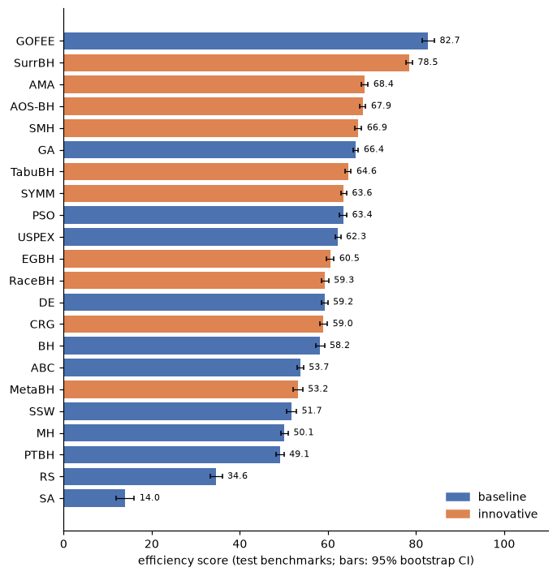
Efficiency matrix
ERT of every algorithm divided by the best ERT on each benchmark (1 = fastest; x = global minimum never found in any run). Rows grouped by category, * marks development benchmarks; columns ordered by overall rank.
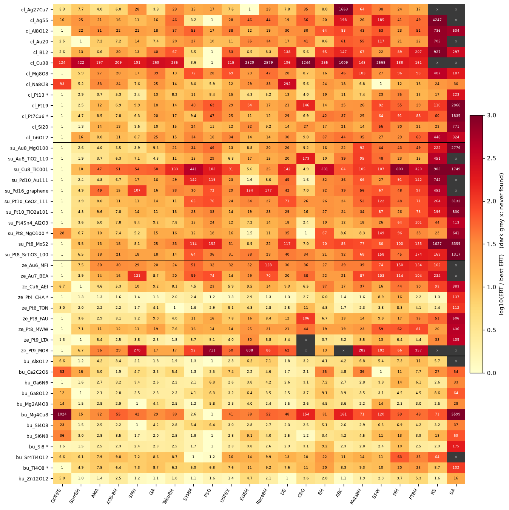
Profiles
Left: Dolan–Moré performance profile – fraction of held-out benchmarks on which an algorithm's ERT is within a factor τ of the best (value at τ=1: how often it is the fastest; right end: robustness). Right: anytime behaviour – fraction of all held-out runs that have found the global minimum after a given fraction of the step budget (solid: new algorithms, dashed: baselines).
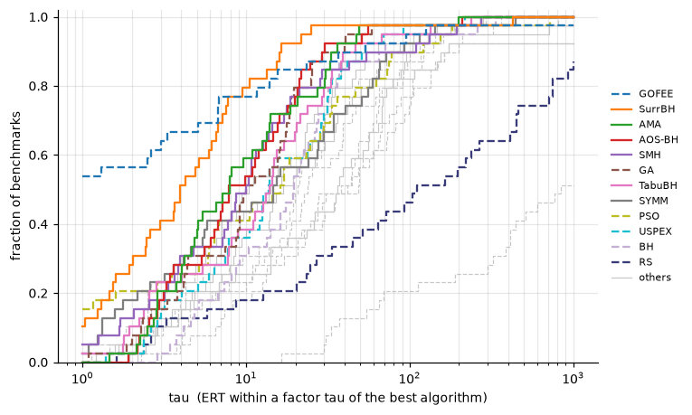
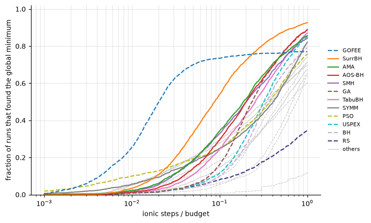
Categories
Efficiency score per benchmark category (all benchmarks of the category, including its development benchmark; number of benchmarks in brackets).
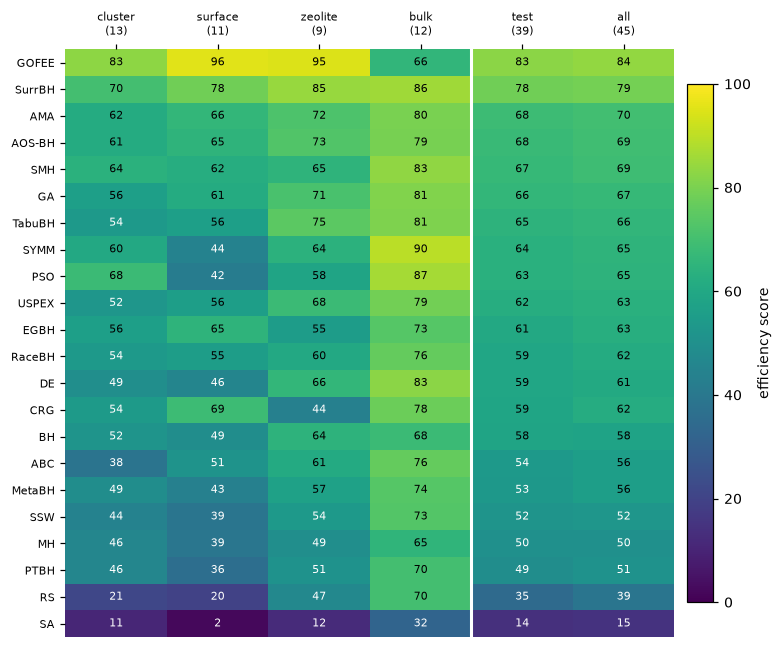
Statistics
Friedman test on per-benchmark ERT ranks (held-out set): χ2 = 362.4, p = 5.2e-64, 39 benchmarks, 22 algorithms. Critical-difference diagram (Nemenyi, α = 0.05): algorithms joined by a red bar are not significantly different in average rank.
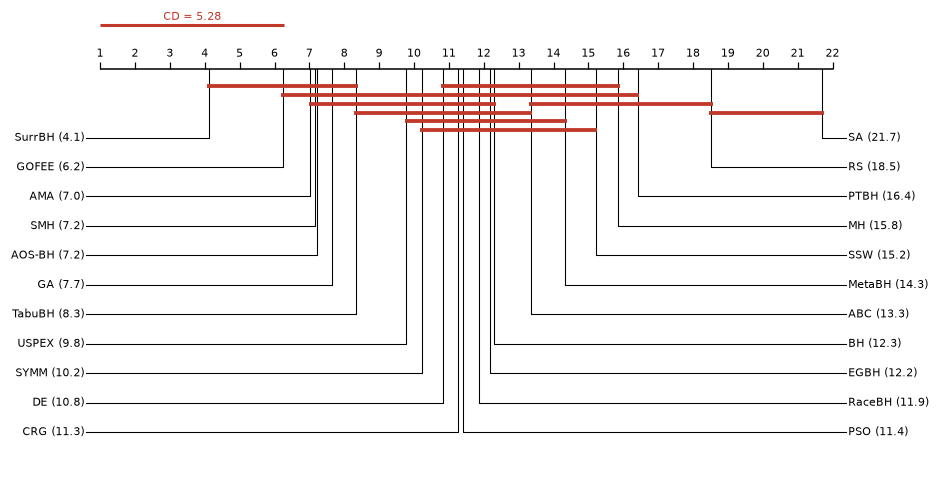
Sensitivity to the success tolerance
The ranking is recomputed with other energy tolerances for a hit (same runs, same Eref). Kendall τ compares the efficiency scores with those of the primary ranking (1 = identical order).
| e_tol (eV) | Kendall τ | Top 3 |
|---|---|---|
| 0.02 (primary) | 1.00 | GOFEE, SurrBH, AMA |
| 0.005 | 0.91 | GOFEE, SurrBH, AMA |
| 0.01 | 0.98 | GOFEE, SurrBH, AMA |
| 0.05 | 0.95 | GOFEE, SurrBH, AMA |
| 0.1 | 0.89 | GOFEE, SurrBH, AMA |
Wall-clock cost
Ionic steps are the primary cost measure. Wall-clock time additionally contains each algorithm's own overhead (surrogate models, fingerprints, population bookkeeping). Bars: geometric mean over benchmarks of wall time per ionic step relative to basin hopping. The 'Score (wall-clock)' column of the ranking repeats the efficiency score with ERT measured in seconds.
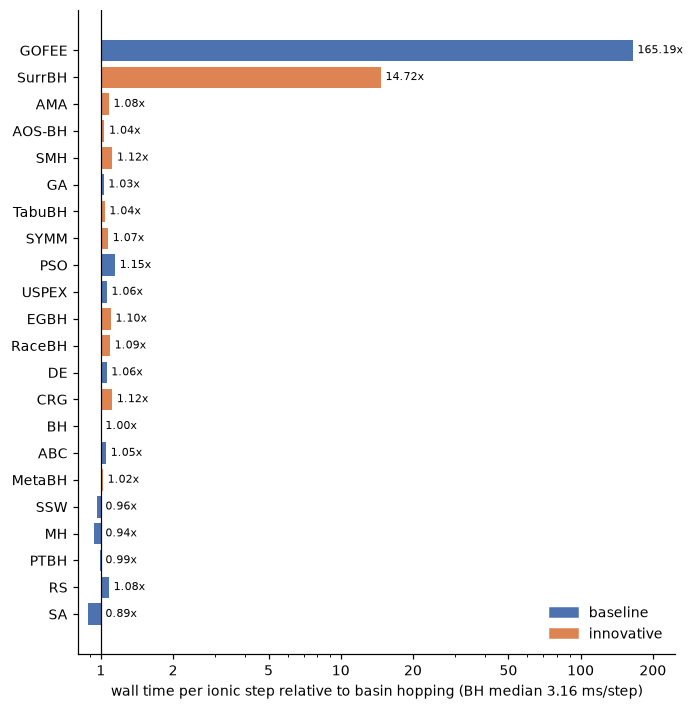
Benchmarks
Eref is the putative global minimum: the lowest energy found by any run of any algorithm (including development runs) in a structure in which the short-range guard and the slab wall are inactive. †: lower-energy structures in which the guard is active (NEP89 holes) were found and are excluded (see Methods). dmin ratio: shortest distance involving a search atom divided by the sum of covalent radii (sanity check of the global minimum).
| Benchmark | Category | System | Atoms (search/total) | Budget | e_tol (eV) | E_ref (eV) | Found by | Fastest | Best ERT | BH ERT | Solved by | d_min ratio |
|---|---|---|---|---|---|---|---|---|---|---|---|---|
| cl_Ag27Cu7 | cluster | Ag27Cu7 nanoalloy | 34/34 | 100,000 | 0.02 | -92.589 | gofee s3 (main) | EGBH | 2949 | 23.7k | 20/22 | 0.93 |
| cl_Ag55 | cluster | Ag55 cluster | 55/55 | 43,000 | 0.02 | -143.904 | gofee s5 (main) | PSO | 496 | 9714 | 21/22 | 0.93 |
| cl_Al8O12 | cluster | (Al2O3)4 cluster | 20/20 | 69,000 | 0.02 | -131.450 | surr s2 (main) | GOFEE | 731 | 46.8k | 22/22 | 0.91 |
| cl_Au20 | cluster | Au20 cluster | 20/20 | 55,000 | 0.02 | -54.218 | gofee s24 (main) | SurrBH | 1916 | 16.5k | 21/22 | 1.00 |
| cl_B12 | cluster | B12 cluster | 12/12 | 20,000 | 0.02 | -70.329 | gofee s0 (freeze-smoke) | PSO | 58 | 5531 | 22/22 | 1.03 |
| cl_Cu38 | cluster | Cu38 cluster | 38/38 | 150,000 | 0.02 | -124.470 | gofee s16 (main) | PSO | 1431 | 365k | 20/22 | 0.94 |
| cl_Mg8O8 | cluster | (MgO)8 cluster | 16/16 | 7,000 | 0.02 | -79.108 | gofee s10 (main) | GOFEE | 139 | 2226 | 22/22 | 0.94 |
| cl_Na8Cl8 | cluster | (NaCl)8 cluster | 16/16 | 84,000 | 0.05 | -46.392 | gofee s13 (main) | SSW | 2617 | 62.7k | 22/22 | 0.96 |
| cl_Pt13 * | cluster | Pt13 cluster | 13/13 | 20,000 | 0.02 | -60.512 | gofee s11 (main) | GOFEE | 81 | 1549 | 22/22 | 0.92 |
| cl_Pt19 | cluster | Pt19 cluster | 19/19 | 10,000 | 0.02 | -93.654 | softmode s9 (main) | GOFEE | 173 | 2422 | 22/22 | 0.93 |
| cl_Pt7Cu6 * | cluster | Pt7Cu6 cluster | 13/13 | 30,000 | 0.02 | -51.243 | gofee s9 (dev-gofee-v2) | GOFEE | 95 | 3955 | 22/22 | 0.91 |
| cl_Si20 | cluster | Si20 cluster | 20/20 | 34,000 | 0.02 | -97.221 | gofee s16 (main) | GOFEE | 342 | 5943 | 22/22 | 1.10 |
| cl_Ti6O12 | cluster | (TiO2)6 cluster | 18/18 | 47,500 | 0.02 | -153.068 | gofee s30 (main) | GOFEE | 422 | 15.6k | 22/22 | 0.75 |
| su_Au8_MgO100 | surface | Au8 / MgO(001) | 8/224 | 19,500 | 0.01 | -1304.467 | gofee s49 (main) | GOFEE | 345 | 5570 | 22/22 | 0.98 |
| su_Au8_TiO2_110 | surface | Au8 / rutile TiO2(110) | 8/332 | 37,000 | 0.02 | -2917.709 | gofee s11 (main) | GOFEE | 2016 | 20.6k | 21/22 | 0.91 |
| su_Cu8_TiC001 | surface | Cu8 / TiC(001) | 8/208 | 27,500 | 0.02 | -1896.129 | gofee s7 (main) | GOFEE | 47 | 15.5k | 22/22 | 0.91 |
| su_Pd10_Au111 | surface | Pd10 / Au(111) | 10/206 | 15,000 | 0.02 | -750.295 | gofee s13 (main) | GOFEE | 189 | 5995 | 21/22 | 0.98 |
| su_Pd16_graphene | surface | Pd16 / graphene | 16/144 | 12,500 | 0.05 | -1253.069 | gofee s5 (main) | GOFEE | 328 | 10.4k | 21/22 | 0.95 |
| su_Pt10_CeO2_111 | surface | Pt10 / CeO2(111) | 10/235 | 20,000 | 0.02 | -2015.337 | gofee s21 (main) | GOFEE | 316 | 8322 | 22/22 | 0.82 |
| su_Pt10_TiO2a101 | surface | Pt10 / anatase TiO2(101) | 10/226 | 21,500 | 0.02 | -1996.772 | gofee s38 (main) | GOFEE | 634 | 17.4k | 22/22 | 0.84 |
| su_Pt4Sn4_Al2O3 | surface | Pt4Sn4 / alpha-Al2O3(0001) | 8/248 | 15,500 | 0.02 | -1796.864 | gofee s36 (main) | GOFEE | 304 | 5840 | 22/22 | 0.95 |
| su_Pt8_MgO100 * | surface | Pt8 / MgO(001) | 8/152 | 30,000 | 0.02 | -903.441 | gofee s46 (main) | CRG | 371 | 24.8k | 22/22 | 0.98 |
| su_Pt8_MoS2 | surface | Pt8 / MoS2 monolayer | 8/116 | 27,500 | 0.02 | -853.724 | gofee s15 (main) | GOFEE | 163 | 11.5k | 22/22 | 0.95 |
| su_Pt8_SrTiO3_100 | surface | Pt8 / SrTiO3(001) | 8/168 | 13,000 | 0.02 | -1306.264 | gofee s48 (main) | GOFEE | 244 | 5101 | 22/22 | 0.88 |
| ze_Au6_MFI | zeolite | Au6 @ MFI (channel intersection) | 6/294 | 11,000 | 0.02 | -2275.943 | gofee s18 (main) | GOFEE | 275 | 7342 | 21/22 | 0.95 |
| ze_Au7_BEA | zeolite | Au7 @ BEA (channel intersection) | 7/199 | 12,000 | 0.02 | -1525.042 | gofee s21 (main) | GOFEE | 212 | 4574 | 21/22 | 0.96 |
| ze_Cu6_AEI | zeolite | Cu6 @ AEI | 6/150 | 16,700 | 0.02 | -1151.465 | gofee s45 (main) | SurrBH | 2160 | 80.4k | 22/22 | 0.92 |
| ze_Pt4_CHA * | zeolite | Pt4 @ CHA | 4/112 | 20,000 | 0.02 | -868.009 | gofee s38 (main) | GOFEE | 91 | 541 | 22/22 | 0.91 |
| ze_Pt6_TON | zeolite | Pt6 @ TON | 6/222 | 17,900 | 0.01 | -1726.858 | gofee s21 (main) | TabuBH | 7998 | 38.5k | 22/22 | 0.92 |
| ze_Pt8_FAU | zeolite | Pt8 @ FAU (supercage) | 8/152 | 12,000 | 0.02 | -1174.364 | gofee s30 (main) | GOFEE | 581 | 3886 | 22/22 | 0.92 |
| ze_Pt8_MWW | zeolite | Pt8 @ MWW | 8/224 | 5,300 | 0.01 | -1735.795 | gofee s40 (main) | GOFEE | 202 | 3919 | 22/22 | 0.94 |
| ze_Pt9_LTA | zeolite | Pt9 @ LTA (alpha cage) | 9/153 | 41,000 | 0.01 | -1175.253 | gofee s30 (main) | SurrBH | 4976 | 18.4k | 21/22 | 0.93 |
| ze_Pt9_MOR | zeolite | Pt9 @ MOR | 9/153 | 13,900 | 0.02 | -1173.951 | surr s15 (main) | GOFEE | 484 | 6427 | 18/22 | 0.91 |
| bu_Al8O12 | bulk | Al2O3 (Al8O12) crystal | 20/20 | 10,000 | 0.02 | -152.733 | surr s31 (main) | PSO | 4834 | 19.9k | 21/22 | 0.99 |
| bu_Ca2C2O6 | bulk | CaCO3 (Ca2C2O6) crystal | 10/10 | 100,000 | 0.02 | -75.385 | surr s40 (main) | SSW | 45.4k | 1612k | 22/22 | 0.91 |
| bu_Ga6N6 | bulk | GaN (Ga6N6) crystal | 12/12 | 10,000 | 0.02 | -73.423 | gofee s18 (main) | GOFEE | 158 | 1142 | 22/22 | 1.01 |
| bu_Ga8O12 | bulk | Ga2O3 (Ga8O12) crystal | 20/20 | 32,000 | 0.02 | -122.997 | softmode s36 (main) | SurrBH | 4902 | 44.5k | 22/22 | 0.98 |
| bu_Mg2Al4O8 | bulk | MgAl2O4 spinel (Mg2Al4O8) crystal | 14/14 | 28,000 | 0.02 | -101.208 | bh s7 (pilot-bbu2-v4) | SMH | 23.5k | 106k | 22/22 | 0.96 |
| bu_Mg4Cu8 | bulk | MgCu2 (Mg4Cu8) Laves-phase crystal | 12/12 | 60,000 | 0.02 | -43.194 | pso s44 (main) | PSO | 528 | 16.3k | 22/22 | 0.93 |
| bu_Si4O8 | bulk | SiO2 (Si4O8) crystal | 12/12 | 43,000 | 0.02 | -94.588 † | softmode s41 (main) | SMH | 5896 | 30.1k | 22/22 | 0.92 |
| bu_Si6N8 | bulk | Si3N4 (Si6N8) crystal | 14/14 | 88,000 | 0.02 | -117.299 | pso s42 (main) | PSO | 8579 | 29.0k | 22/22 | 0.95 |
| bu_Si8 * | bulk | Si8 crystal | 8/8 | 20,000 | 0.02 | -44.116 | pso s7 (dev-pso-final) | PSO | 57 | 525 | 22/22 | 1.11 |
| bu_Sr4Ti4O12 | bulk | SrTiO3 (Sr4Ti4O12) crystal | 20/20 | 22,000 | 0.02 | -163.984 † | pso s39 (main) | SYMM | 1351 | 30.2k | 21/22 | 0.87 |
| bu_Ti4O8 * | bulk | TiO2 (Ti4O8) crystal | 12/12 | 30,000 | 0.02 | -109.891 | surr s0 (dev-surr-v4) | GOFEE | 186 | 3701 | 22/22 | 0.86 |
| bu_Zn12O12 | bulk | ZnO (Zn12O12) crystal | 24/24 | 20,000 | 0.02 | -106.397 | softmode s49 (main) | DE | 2945 | 8329 | 22/22 | 1.05 |
Benchmark descriptions and literature context (click to expand)
- cl_Ag27Cu7 – Ag27Cu7 nanoalloy. Gas-phase Ag27Cu7 nanoalloy (geometry plus homotop / chemical-ordering search). With the Gupta potential the GM is a perfect core-shell polyicosahedron (pIh7, D5h) with a Cu7 pentagonal-bipyramid core under a 27-atom Ag shell (Rossi et al., PRL 93, 105503 (2004)); NEP89 reproduces this structure.
- cl_Ag55 – Ag55 cluster. Gas-phase Ag55. The Mackay icosahedron is the GM for many-body potentials (Cambridge Cluster Database) and is supported by DFT and photoelectron spectra of Ag55- (Haekkinen et al., PRL 93, 093401 (2004)). NEP89 reproduces it, about 2 eV below the cuboctahedron and Ino decahedron; the difficulty is the size of the landscape rather than near-degenerate competitors.
- cl_Al8O12 – (Al2O3)4 cluster. Gas-phase (Al2O3)4, an alumina dust-nucleation and gas-phase IR target; DFT global minima of small (Al2O3)n are compact cages of 4-membered Al2O2 and 6-membered Al3O3 rings with 3-5-fold Al and 2-4-fold O (Rahane, Deshpande & Kumar, JPCC 115, 18111 (2011)), and for n = 4 the B3LYP GM is a low-symmetry (C1) cage while PBE0 prefers a D3d isomer (Gobrecht et al., A&A 658, A167 (2022)). The NEP89 putative GM has these features (Cs cage; five 3-fold and three 4-fold Al; ten 2-fold, one 3-fold and one 4-fold O; two Al2O2 and eight Al3O3 rings; Al-O 1.71-1.98 Å; no O-O or Al-Al bonds), but its identity with the DFT GM was not verified. A Cs isomer 0.20 eV higher (one 2-fold Al) forms a competing funnel that traps some basin-hopping runs. Artefact screening: NEP89 has an O-O bonded hole; a particle-swarm run found a cage with O-O 1.11 and 1.22 Å, Al-O 1.53 Å and only 5-fold Al, 0.08 eV below the physical minimum. An O-O guard floor of 1.9 Å (guard_pairs; the shortest physical O-O distance here is 2.49 Å) lifts it by 41 eV and leaves the physical minima unchanged. [guard f = 0.75, O-O floor 1.9 A]
- cl_Au20 – Au20 cluster. Gas-phase Au20. DFT and photoelectron spectroscopy give a tetrahedral (Td) pyramid, a 20-atom fcc fragment (Li, Li, Zhai & Wang, Science 299, 864 (2003)). NEP89 instead prefers a low-symmetry structure with one interior atom; the relaxed Td pyramid is 0.11 eV higher.
- cl_B12 – B12 cluster. Gas-phase B12. Photoelectron spectroscopy and ab initio calculations establish a quasi-planar C3v global minimum (Zhai et al., Nat. Mater. 2, 827 (2003)), with 3D isomers such as the icosahedron several eV higher. NEP89 reverses this ordering: its putative GM is the Ih icosahedron (B-B 1.73 Å, the building block of bulk boron), 2.7 eV below the relaxed quasi-planar C3v structure, so this benchmark probes search on the NEP89 landscape rather than boron-cluster chemistry.
- cl_Cu38 – Cu38 cluster. Gas-phase Cu38. For many-body potentials (Gupta, Sutton-Chen) the GM is the Oh fcc truncated octahedron, separated from icosahedral/decahedral structures as in the LJ38 double funnel (Doye & Wales, New J. Chem. 22, 733 (1998); Cambridge Cluster Database). NEP89 agrees; the best non-fcc structure found lies 0.11 eV higher.
- cl_Mg8O8 – (MgO)8 cluster. Gas-phase (MgO)8. IR spectroscopy combined with DFT global optimisation (Haertelt et al., PCCP 14, 2849 (2012)) assigns cage-like structures containing hexagonal (MgO)3 rings, not rocksalt cuboids, to (MgO)n with n != 3k. NEP89 instead favours rocksalt fragments: its putative GM (a 3×3×2 rocksalt slab missing one corner MgO pair; Mg 3-5-fold coordinated, Mg-O 1.94-2.31 Å, no O-O or Mg-Mg bonds) lies 0.25 eV below the 2×2×4 cuboid and 2.7 eV below a hand-built hexagonal-ring cage.
- cl_Na8Cl8 – (NaCl)8 cluster. Gas-phase (NaCl)8. Small alkali-halide clusters adopt rocksalt-cuboid structures in ab initio and Tosi-Fumi studies (Aguado et al., PRB 56, 15353 (1997); Doye & Wales, PRB 59, 2292 (1999)), and the NEP89 putative GM is the 2×2×4 rocksalt cuboid (Na-Cl 2.56-2.65 Å). The landscape is soft: fmax = 0.05 relaxations of the same GM differ by up to 0.016 eV (0.3 meV after tight relaxation), hence etol = 0.05 eV.
- cl_Pt13 – Pt13 cluster. Gas-phase Pt13.
- cl_Pt19 – Pt19 cluster. Gas-phase Pt19. PBE and hybrid DFT give a Pt18 three-layer trigonal prism capped on a triangular face (C3v; Kumar & Kawazoe, PRB 77, 205418 (2008); J. Mol. Model. (2024), doi:10.1007/s00894-024-06099-5). NEP89 instead prefers a hollow 19-vertex deltahedral cage (all atoms 5- or 6-coordinated, Pt-Pt 2.53-2.57 Å), 1.5 eV below the relaxed DFT structure and 0.66 eV below the fcc octahedron, so this landscape is NEP89-specific.
- cl_Pt7Cu6 – Pt7Cu6 cluster. Gas-phase bimetallic Pt7Cu6 nanoalloy (13 atoms): geometric and homotop (chemical ordering) search.
- cl_Si20 – Si20 cluster. Gas-phase Si20. Ion-mobility measurements and DFT show prolate Sin clusters built from stacked tricapped-trigonal-prism units up to n ~ 25, with compact isomers close in energy around n = 20 (Ho et al., Nature 392, 582 (1998)). NEP89 has two near-degenerate putative minima, a compact oblate GM and a prolate isomer only 2 meV higher (tight relaxation), both with 4-7-fold coordinated Si and Si-Si ≥ 2.41 Å, so a hit (E ≤ Ebest + etol) can be either isomer.
- cl_Ti6O12 – (TiO2)6 cluster. Gas-phase (TiO2)6, a standard titania-nanocluster global-optimisation target; DFT global minima of small (TiO2)n are compact, with 4-/5-fold coordinated Ti and one or two terminal Ti=O groups (Qu & Kroes, JPCB 110, 8998 (2006); Lamiel-Garcia et al., Nanoscale 9, 1049 (2017)). The NEP89 putative GM has these features (two titanyl O at 1.69 Å, four 4- and two 5-fold Ti, nine 4-membered Ti2O2 rings, no O-O bonds), but its identity with the DFT GM was not verified; the default repulsive guard (Ti-O r0 = 1.695 Å) is marginally active on the titanyl bonds (0.3 meV).
- su_Au8_MgO100 – Au8 / MgO(001). Au8 on a frozen 3-layer MgO(001) slab (6×6 primitive surface cells, 216 atoms; NEP89 a = 4.203 Å vs exp. 4.212 Å), the classic model of size-selected Aun/MgO catalysts (Ricci et al., Phys. Rev. Lett. 97, 036106 (2006)). The NEP89 putative GM is a flat Au8 island with all 8 Au in contact with the surface (Au-Au 2.74-2.83 Å); NEP89 puts single Au atoms on top of O as DFT does, but places the best 3D isomers found (fcc 6+2 bilayers) ≥ 0.69 eV above the flat GM, whereas DFT finds 3D Au8 on bulk MgO(001) and planar Au8 only on metal-supported MgO films that charge the cluster (Ricci et al. 2006), i.e. NEP89 over-stabilises wetting. etol is 0.015 eV because distinct flat isomers lie 0.019 eV above the GM.
- su_Au8_TiO2_110 – Au8 / rutile TiO2(110). Au8 on a frozen 3-trilayer stoichiometric rutile TiO2(110) slab (3×6 cell, 19.5 × 17.7 Å, 324 atoms; NEP89 a = 4.606 Å, c = 2.957 Å vs exp. 4.594, 2.959 Å), the model support of Au/TiO2 CO-oxidation catalysts (Valden, Lai and Goodman, Science 281, 1647 (1998)). The NEP89 putative GM is a compact 3D Au8 with 5 Au in contact, 3 on the bridging-O row (Au-O 2.20 Å) and 2 atop 5-fold Ti in the trough (Au-Ti 2.68 Å); DFT likewise finds small Aun turning 3D on stoichiometric TiO2(110) (Au7) but binds them mainly through bridging and in-plane O (Chretien and Metiu, J. Chem. Phys. 127, 084704 (2007)), whereas NEP89 also favours Au-Ti5c contacts (a single Au sits atop Ti5c). The stoichiometric frozen slab lacks the O vacancies that anchor Au in experiment.
- su_Cu8_TiC001 – Cu8 / TiC(001). Cu8 on a frozen 4-layer TiC(001) slab (5×5 primitive cells, 200 atoms; NEP89 a = 4.285 Å vs exp. 4.328 Å), a model of Cu/TiC(001) catalysts for CO2 hydrogenation to methanol (Vidal et al., J. Phys. Chem. Lett. 3, 2275 (2012)). The NEP89 putative GM is a flat Cu8 island with every Cu on a top-C site (Cu-C 1.95 Å), the adatom site found by DFT (Gomez et al., J. Phys. Chem. C 114, 1622 (2010)); DFT places the 2D-to-3D crossover at Cu7 and finds a Cu6+2 bilayer for Cu8 (Li et al., ACS Omega 6, 27259 (2021)), which NEP89 puts 0.55 eV above its flat GM, i.e. NEP89 over-stabilises wetting.
- su_Pd10_Au111 – Pd10 / Au(111). Pd10 on a frozen 4-layer Au(111) slab (7×7, 196 Au; NEP89 a(Au) = 4.111 Å vs exp. 4.078 Å), a model of Pd-Au bimetallic catalysts and PdAu(111) surface alloys (Maroun et al., Science 293, 1811 (2001); Chen et al., Science 310, 291 (2005)). The NEP89 putative GM is a flat Pd10 island with every Pd in an fcc hollow (the same island in hcp hollows is 0.24 eV higher), in line with the 2D close-packed Pd islands seen by STM on Au(111) (Casari et al., Phys. Rev. B 79, 195402 (2009)); the frozen substrate excludes the Pd-Au place exchange (surface alloying) observed at room temperature.
- su_Pd16_graphene – Pd16 / graphene. Pd16 on frozen graphene (8×8, 128 C; NEP89 a = 2.476 Å vs exp. 2.461 Å), a model of graphene-supported Pd catalysts; DFT finds Pd clusters on graphene to be 3D from Pd4 on, because Pd-Pd bonding dominates the weak Pd-graphene interaction (Cabria et al., Phys. Rev. B 81, 035403 (2010)). The NEP89 putative GM is a Pd13 icosahedron with three capping atoms that touches graphene with a single vertex atom above a C6 hollow (Pd-C 2.39 Å); other capping isomers and orientations lie within 0.031 eV (next family +0.074 eV) and runs that reached the GM structure differ by up to 0.024 eV, hence etol = 0.05 eV.
- su_Pt10_CeO2_111 – Pt10 / CeO2(111). Pt10 on a frozen O-terminated CeO2(111) slab (3 O-Ce-O trilayers, 5×5 cell, 225 atoms; NEP89 a = 5.438 Å vs exp. 5.411 Å), a model of Pt/ceria oxidation and three-way catalysts. The NEP89 putative GM is a 3D Pt7+3 bilayer bound to surface O (Pt-O 1.99 Å), and NEP89 Pt8 is planar, in line with the DFT 2D-to-3D transition above Pt8 for PtN on CeO2(111) (Paz-Borbon et al., Phys. Chem. Chem. Phys. 19, 17845 (2017)). NEP89 is charge-neutral: the Pt-to-ceria electron transfer and Ce4+ → Ce3+ reduction found by DFT are not described, and the frozen slab excludes O spillover and vacancy formation.
- su_Pt10_TiO2a101 – Pt10 / anatase TiO2(101). Pt10 on a frozen 3-layer stoichiometric anatase TiO2(101) slab (oblique 15.2 × 15.3 Å cell, 216 atoms; NEP89 a = 3.819 Å, c = 9.296 Å vs exp. 3.785, 9.514 Å), the majority facet of anatase-supported Pt photo- and thermal catalysts. The NEP89 putative GM is a 3D Pt5+5 bilayer anchored on the terrace by 5-fold Ti (Pt-Ti 2.49-2.65 Å) and 2-fold O (Pt-O 2.09 Å), consistent with the strong Pt binding on anatase(101) terraces found by DFT and STM (Gong et al., J. Am. Chem. Soc. 130, 370 (2008)). Caveats: NEP89 Pt-Ti contacts are short (2.76 Å in Pt3Ti), NEP89 is charge-neutral and its anatase c axis is 2.3% too short.
- su_Pt4Sn4_Al2O3 – Pt4Sn4 / alpha-Al2O3(0001). Pt4Sn4 on a frozen Al-terminated alpha-Al2O3(0001) slab ((2sqrt3 × 2sqrt3)R30, Al96O144; NEP89 a/c = 4.753/12.895 Å vs exp. 4.759/12.991 Å), a model of Pt-Sn/Al2O3 propane-dehydrogenation catalysts (sub-nanometre Pt and PtSn clusters on alumina: Baxter et al., ACS Catal. 7, 3322 (2017); Liu et al., ACS Catal. 13, 2802 (2023)). In the NEP89 putative GM the oxophilic Sn atoms bind surface O (Sn-O 2.37-2.55 Å) and carry the Pt atoms on top (only Pt-Sn and Pt-Pt bonds, no Sn-Sn); note that NEP89 relaxes the surface Al 0.4 Å below the top O plane (DFT: about 0.1 Å above).
- su_Pt8_MgO100 – Pt8 / MgO(001). Pt8 cluster on a frozen 4-layer MgO(001) slab (3×3 conventional cells, 144 atoms).
- su_Pt8_MoS2 – Pt8 / MoS2 monolayer. Pt8 on a frozen 1H-MoS2 monolayer (6×6, 108 atoms; NEP89 a = 3.150 Å vs exp. 3.160 Å), a model of Pt/MoS2 catalysts; DFT finds that Ptn clusters on the MoS2 basal plane become 3D from n = 5 and that Pt particles bind to S (Saidi, Cryst. Growth Des. 15, 642 (2015)). The NEP89 putative GM is a 3D 5+3 Pt bilayer whose five lower Pt sit above Mo atoms, each bonded to three S (Pt-S 2.31-2.35 Å, Pt-Pt 2.58-2.60 Å); the lowest competing isomer, a 4+4 bilayer, is 0.16 eV higher.
- su_Pt8_SrTiO3_100 – Pt8 / SrTiO3(001). Pt8 on a frozen TiO2-terminated SrTiO3(001) slab (SrO/TiO2/SrO/TiO2, 4×4 cell, 160 atoms; NEP89 a = 3.908 Å vs exp. 3.905 Å), a model of Pt/SrTiO3 photocatalysts and perovskite-supported Pt. The NEP89 putative GM is a single buckled Pt8 layer (6 Pt on the surface, Pt-O 2.19 Å, Pt-Ti 2.61 Å; 2 Pt 1.7 Å higher), in line with DFT, which finds the TiO2 termination favourable for epitaxial Pt(100) films (Asthagiri and Sholl, J. Chem. Phys. 116, 9914 (2002)). NEP89 is charge-neutral and the frozen, unreconstructed slab excludes the surface reconstructions and O vacancies of real SrTiO3(001).
- ze_Au6_MFI – Au6 @ MFI (channel intersection). Au6 cluster at the intersection of the straight and sinusoidal 10-ring channels of a frozen all-silica MFI framework (silicalite-1; NEP89-relaxed orthorhombic cell, 288 framework atoms). Metal clusters encapsulated in MFI resist sintering (Goel, Zones and Iglesia, J. Am. Chem. Soc. 136, 15280 (2014)); for Au clusters in zeolites see Otto, Zones and Iglesia, J. Catal. 339, 195 (2016). Caveat: NEP89 is not fitted to metal/zeolite interfaces and the framework is rigid, so cluster-wall binding is qualitative (NEP89 GM: buckled Au6 anchored to the intersection wall); Au replaces Pd because NEP89 bonds Pd and Pt atoms to SiO4 edges of MFI (M-Si 2.4-2.5 Å).
- ze_Au7_BEA – Au7 @ BEA (channel intersection). Au7 cluster at an intersection of the 12-ring channels of a frozen all-silica zeolite beta (polymorph A; NEP89-relaxed tetragonal cell, 192 framework atoms). Metal clusters immobilised inside beta crystals resist sintering (Wang et al., Nat. Catal. 1, 540 (2018)). Caveat: NEP89 is not fitted to metal/zeolite interfaces and the framework is rigid, so cluster-wall binding is qualitative (NEP89 GM: planar Au7 spanning the intersection).
- ze_Cu6_AEI – Cu6 @ AEI. Cu6 cluster in the pear-shaped aei cage (8-ring windows, 3.8 Å) of a frozen all-silica AEI (SSZ-39) framework (NEP89-relaxed conventional cell, 144 atoms); Cu-SSZ-39 is a hydrothermally stable NH3-SCR deNOx catalyst (Moliner et al., Chem. Commun. 48, 8264 (2012)) in which Cu can agglomerate into clusters. Framework Al, ionic/oxidic Cu and framework relaxation are not modelled, NEP89 binds Cu atoms to the cage wall (Cu-O ~2.1 Å, Cu-Si ~2.4 Å) and places this framework 6.7 kJ/mol SiO2 below alpha-quartz (calorimetry: all-silica zeolites lie ~7-14 kJ/mol above), so the global minimum is a model-PES optimum.
- ze_Pt4_CHA – Pt4 @ CHA. Pt4 cluster inside the cha cage of a frozen all-silica chabazite framework (hexagonal cell, 108 atoms).
- ze_Pt6_TON – Pt6 @ TON. Pt6 cluster in the one-dimensional 10-ring channel (4.6 × 5.7 Å) of a frozen all-silica TON (ZSM-22/Theta-1) framework (NEP89-relaxed from a symmetry-broken start, 1×1×3 supercell, 216 atoms; density within 0.3 % of Theta-1); Pt/ZSM-22 is the classic shape-selective n-alkane hydroisomerisation catalyst (Martens and co-workers). Framework Al/H+ sites and framework relaxation are absent, NEP89 binds Pt to siloxane O (Pt-O ~2.2 Å) and places this framework 3.6 kJ/mol SiO2 below alpha-quartz, so the global minimum is a model-PES optimum (Pt is used because NEP89 spuriously embeds Ir/Rh atoms into silica walls).
- ze_Pt8_FAU – Pt8 @ FAU (supercage). Pt8 cluster in the supercage (~11.2 Å) of a frozen all-silica faujasite (siliceous Y; NEP89-relaxed rhombohedral primitive cell, 144 framework atoms). Pt clusters in the supercages of Y zeolite are the classic encapsulated noble-metal catalyst (Gallezot et al., J. Catal. 39, 334 (1975)). Caveat: NEP89 is not fitted to metal/zeolite interfaces and the framework is rigid, so cluster-wall binding is qualitative (NEP89 GM: flat Pt8 anchored to the wall by four Pt-O).
- ze_Pt8_MWW – Pt8 @ MWW. Pt8 cluster in the 12-ring supercage (7.1 × 18.2 Å, 10-ring windows) of a frozen all-silica MWW (MCM-22/ITQ-1) framework (NEP89-relaxed hexagonal cell, 216 atoms); subnanometric Pt clusters encapsulated in MCM-22 cavities are sinter-resistant, size-selective catalysts (Liu et al., Nat. Mater. 16, 132 (2017)). Framework Al/H+ sites and framework relaxation are absent, NEP89 places this framework 0.8 kJ/mol SiO2 below alpha-quartz and attracts Pt to the cage wall by ~0.7 eV/atom even at Pt-O distances > 3 Å, so the global minimum is a model-PES optimum.
- ze_Pt9_LTA – Pt9 @ LTA (alpha cage). Pt9 cluster in the alpha cage (11.4 Å) of a frozen all-silica LTA framework (ITQ-29; NEP89-relaxed, fcc-type 2x supercell, 144 framework atoms). Pt, Pd and Rh clusters encapsulated in LTA were prepared by Choi, Wu and Iglesia (J. Am. Chem. Soc. 132, 9129 (2010)). Caveat: NEP89 is not fitted to metal/zeolite interfaces and the framework is rigid, so cluster-wall binding is qualitative (NEP89 GM: planar Pt9 lying flat on the cage wall).
- ze_Pt9_MOR – Pt9 @ MOR. Pt9 cluster in the 12-ring main channel (6.5 × 7.0 Å, with 8-ring side pockets) of a frozen all-silica mordenite framework (NEP89-relaxed 1×1×2 primitive supercell, 144 atoms); Pt/H-mordenite is the industrial light-naphtha isomerisation catalyst (Shell Hysomer process). Framework Al/H+ sites and framework relaxation are absent and NEP89 binds Pt to siloxane O atoms (Pt-O ~2.0 Å), so the global minimum is a model-PES optimum (Pt is used because NEP89 spuriously embeds Rh/Ir atoms into silica walls).
- bu_Al8O12 – Al2O3 (Al8O12) crystal. Crystal structure prediction of Al2O3 with 4 formula units (20 atoms) per cell. The experimental ground state corundum (alpha-Al2O3, R-3c; this cell is twice its rhombohedral primitive cell) is also the NEP89 global minimum; theta-Al2O3 (beta-Ga2O3 type, mixed tetrahedral/octahedral Al, +36 meV/atom with NEP89) is a deep competing funnel.
- bu_Ca2C2O6 – CaCO3 (Ca2C2O6) crystal. Variable-cell crystal-structure prediction of CaCO3 with two formula units (10 atoms) per cell: planar CO3 anions must assemble from random atoms. Experimental ground state: calcite (R-3c, 10-atom primitive cell); aragonite and vaterite are metastable. NEP89 caveats: the putative NEP89 global minimum is a vaterite-like layered polymorph (CO3 planes normal to the Ca layers, +6% volume) 7.4 meV/atom below calcite, and CaO + CO2 is only 0.32 eV/f.u. above calcite (exp. ~1.8 eV), a frequent trap.
- bu_Ga6N6 – GaN (Ga6N6) crystal. Variable-cell crystal-structure prediction of GaN with six formula units (12 atoms) per cell. Experimental ground state: wurtzite (P6_3mc); zinc blende (~10 meV/atom higher in DFT), the 6H polytype and the high-pressure rocksalt phase compete. NEP89 caveat: NEP89 puts zinc blende 33 meV/atom below wurtzite (wrong polytype ordering), so its global minimum is zinc blende. Artefact screening: NEP89 has an N-N bonded collapsed hole (N-N 1.17 Å, Ga-Ga 2.02 Å, 12-fold Ga, 2.7 eV below zinc blende), found by symmetry-constrained random search. An N-N guard floor of 1.9 Å (guard_pairs; physical N-N ≥ 3.1 Å) lifts it by 46 eV and leaves the physical minima unchanged. [guard f = 0.75, N-N floor 1.9 A]
- bu_Ga8O12 – Ga2O3 (Ga8O12) crystal. Crystal structure prediction of Ga2O3 with 4 formula units (20 atoms) per cell. The experimental ground state beta-Ga2O3 (C2/m, half tetrahedral and half octahedral Ga; this cell is twice its primitive cell) is also the NEP89 global minimum; corundum-type alpha-Ga2O3 (+28.7 meV/atom with NEP89) is a deep competing funnel (the mirror image of bu_Al8O12, where corundum is the ground state and the beta-Ga2O3 type is the trap).
- bu_Mg2Al4O8 – MgAl2O4 spinel (Mg2Al4O8) crystal. Variable-cell crystal-structure prediction of the spinel MgAl2O4 with two formula units (14 atoms, the fcc primitive cell of spinel) per cell. Experimental ground state: normal spinel (Fd-3m; Mg tetrahedral, Al octahedral); inverse cation orderings and MgO + Al2O3 (corundum) compete. NEP89 caveat: the inverse spinel (Al tetrahedral, Mg + Al octahedral) is 62 meV/atom below normal spinel, which is even 49 meV/atom above MgO + Al2O3, so the NEP89 global minimum is the inverse spinel.
- bu_Mg4Cu8 – MgCu2 (Mg4Cu8) Laves-phase crystal. Variable-cell crystal-structure prediction of the Laves phase MgCu2 with four formula units (12 atoms) per cell: a size-mismatched, topologically close-packed intermetallic. Experimental ground state: cubic C15 (Fd-3m); the hexagonal C14 (MgZn2-type) polytype and AlB2/MoSi2-type AB2 structures compete. NEP89 reproduces C15 as the global minimum, but C14 is only 0.5 meV/atom higher (within etol, so it also counts as a hit).
- bu_Si4O8 – SiO2 (Si4O8) crystal. Crystal structure prediction of SiO2 with 4 formula units (12 atoms) per cell, which fits alpha-cristobalite, tridymite and stishovite but not the experimental ground state alpha-quartz (Z=3; 29.6 meV/atom above the GM with NEP89). NEP89 over-stabilises open corner-sharing SiO4 frameworks (alpha-cristobalite 24.5 meV/atom below quartz): the putative NEP89 global minimum is an all-silica ABW zeolite framework (coordination sequence 4,10,21,36,54,...; 17.3 ų/atom, 23% less dense than quartz), 5.1 meV/atom below alpha-cristobalite. NEP89 also has an unphysical hole with over-short Si=O bonds (1.30 Å) and Si-Si bonds that lies 0.12 eV below this minimum; a Si-O guard floor of 1.45 Å removes it (physical Si-O bonds are ≥ 1.5 Å). [guard f = 0.75, O-Si floor 1.45 A] [Eref excludes 4 lower-energy structures in which the guard is active: NEP89 holes, found in the main experiment, that the guard makes shallower but does not remove (lowest -102.843 eV; runs of PSO, SYMM; see Methods)]
- bu_Si6N8 – Si3N4 (Si6N8) crystal. Crystal structure prediction of Si3N4 with 2 formula units (14 atoms) per cell, the primitive cell of both the experimental ground state beta-Si3N4 (P6_3/m) and spinel gamma-Si3N4. The putative NEP89 global minimum is not beta-Si3N4 but a hypothetical, chemically sensible network (tetrahedral Si, 3-coordinated but pyramidal N, no homopolar bonds) 12 meV/atom below beta-Si3N4 and 7% denser. Artefact screening: NEP89 has two collapsed holes, an N-N bonded phase (N-N 1.10-1.14 Å, Si-Si 1.97 Å, 28.5 eV below the physical minimum) and a dense phase with Si-Si 1.65 Å (5.2 eV below), both found by symmetry-constrained random search. Guard factor 0.90 (Si-Si ≥ 2.0 Å, Si-N ≥ 1.64 Å) plus an N-N floor of 1.9 Å remove both (re-relaxed ≥ 8.7 eV above the minimum); the physical minima (Si-N ≥ 1.68 Å, N-N ≥ 2.7 Å) are unchanged. [guard f = 0.9, N-N floor 1.9 A]
- bu_Si8 – Si8 crystal. Crystal structure prediction, 8 Si atoms per cell.
- bu_Sr4Ti4O12 – SrTiO3 (Sr4Ti4O12) crystal. Variable-cell crystal-structure prediction of the perovskite SrTiO3 with four formula units (20 atoms) per cell, enough for octahedral tilt systems (a0a0c-, I4/mcm: the experimental low-temperature phase; cubic Pm-3m above 105 K; a-b+a- Pnma as in CaTiO3); ilmenite and hexagonal-perovskite arrangements compete. In NEP89 tilts gain < 1 meV/atom, so cubic and tilted perovskites are nearly degenerate. guard_factor 0.80: NEP89 has a short-range Sr-O hole (with the default 0.75 an unphysical Sr2Ti2O6 structure with Sr-O = 1.93 Å was 0.046 eV below the perovskite). [guard f = 0.8] [Eref excludes 16 lower-energy structures in which the guard is active: NEP89 holes, found in the main experiment, that the guard makes shallower but does not remove (lowest -164.214 eV; runs of AMA, AOS-BH, EGBH, SMH, SurrBH, TabuBH; see Methods)]
- bu_Ti4O8 – TiO2 (Ti4O8) crystal. Crystal structure prediction of TiO2 with 4 formula units per cell (rutile, anatase, brookite-like and high-pressure polymorphs compete). guard_factor 0.80: with the default guard (0.75) NEP89 has a dense collapsed phase (about 5.5 ų/atom, Ti-Ti 2.21 Å, O-O 1.2 Å, 12-18 neighbours per Ti) about 1 eV below anatase; the stronger guard (Ti-Ti ≥ 2.56 Å, Ti-O ≥ 1.81 Å) removes it and is zero for rutile, anatase and brookite. [guard f = 0.8]
- bu_Zn12O12 – ZnO (Zn12O12) crystal. Crystal structure prediction of ZnO with 12 formula units (24 atoms) per cell. The experimental ground state wurtzite (P6_3mc) is also the NEP89 global minimum; the nearly degenerate tetrahedral stacking polytypes (4H +5, zinc blende +7 meV/atom) and rocksalt (+47 meV/atom) are competing minima.
Putative global minima (search atoms in full colour, host atoms faded)
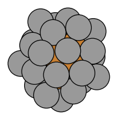
cl_Ag27Cu7
-92.589 eV
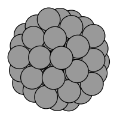
cl_Ag55
-143.904 eV
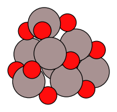
cl_Al8O12
-131.450 eV
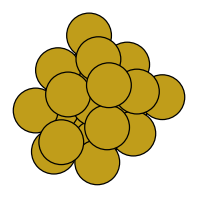
cl_Au20
-54.218 eV
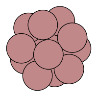
cl_B12
-70.329 eV
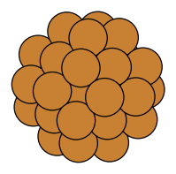
cl_Cu38
-124.470 eV
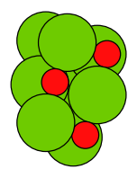
cl_Mg8O8
-79.108 eV
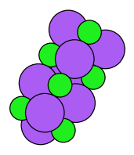
cl_Na8Cl8
-46.392 eV
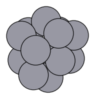
cl_Pt13
-60.512 eV
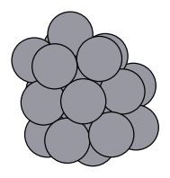
cl_Pt19
-93.654 eV
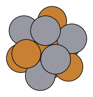
cl_Pt7Cu6
-51.243 eV
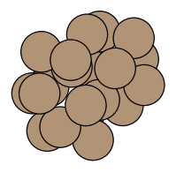
cl_Si20
-97.221 eV
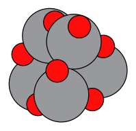
cl_Ti6O12
-153.068 eV
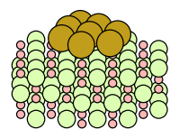
su_Au8_MgO100
-1304.467 eV
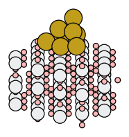
su_Au8_TiO2_110
-2917.709 eV
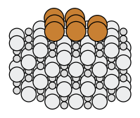
su_Cu8_TiC001
-1896.129 eV
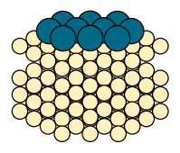
su_Pd10_Au111
-750.295 eV
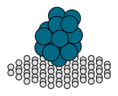
su_Pd16_graphene
-1253.069 eV
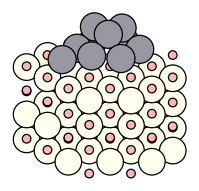
su_Pt10_CeO2_111
-2015.337 eV
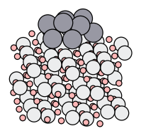
su_Pt10_TiO2a101
-1996.772 eV
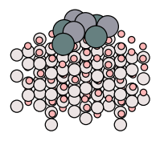
su_Pt4Sn4_Al2O3
-1796.864 eV
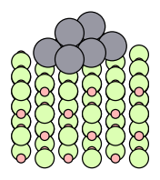
su_Pt8_MgO100
-903.441 eV
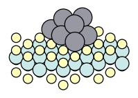
su_Pt8_MoS2
-853.724 eV
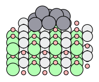
su_Pt8_SrTiO3_100
-1306.264 eV
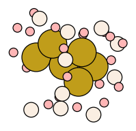
ze_Au6_MFI
-2275.943 eV
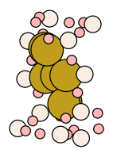
ze_Au7_BEA
-1525.042 eV
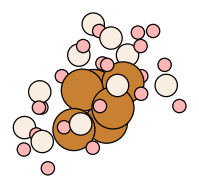
ze_Cu6_AEI
-1151.465 eV
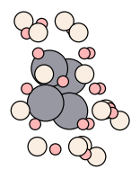
ze_Pt4_CHA
-868.009 eV
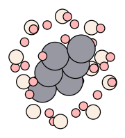
ze_Pt6_TON
-1726.858 eV
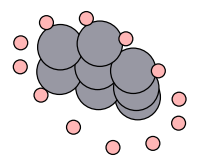
ze_Pt8_FAU
-1174.364 eV
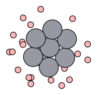
ze_Pt8_MWW
-1735.795 eV
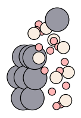
ze_Pt9_LTA
-1175.253 eV
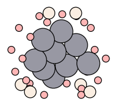
ze_Pt9_MOR
-1173.951 eV
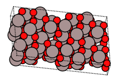
bu_Al8O12
-152.733 eV
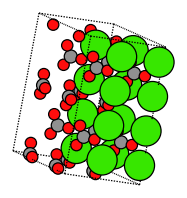
bu_Ca2C2O6
-75.385 eV
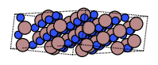
bu_Ga6N6
-73.423 eV
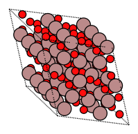
bu_Ga8O12
-122.997 eV
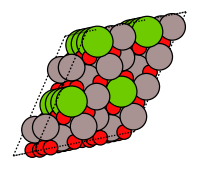
bu_Mg2Al4O8
-101.208 eV
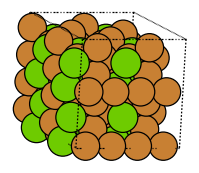
bu_Mg4Cu8
-43.194 eV
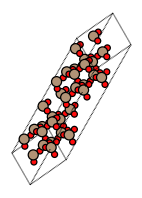
bu_Si4O8
-94.588 eV
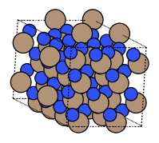
bu_Si6N8
-117.299 eV
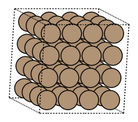
bu_Si8
-44.116 eV
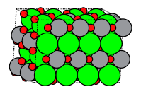
bu_Sr4Ti4O12
-163.984 eV
bu_Ti4O8
-109.891 eV
bu_Zn12O12
-106.397 eV
Success rate versus ionic steps
Gas-phase clusters
Supported clusters
Metal clusters in zeolites
Bulk crystals
Algorithms
| Algorithm | Key | Type | Description | Reference |
|---|---|---|---|---|
| Artificial bee colony (ABCluster) | abc | baseline | Swarm-intelligence search over a population of SN=10 locally relaxed structures (food sources). In every cycle, employed bees create one neighbour per source by moving a random subset of atoms (bulk: also the lattice) along the difference to another, aligned source, v = x_i + phi (x_i - x_k) with phi in [-1,1], relax it and keep it only if it is lower in energy; onlooker bees repeat this on sources drawn with probability proportional to fitness, and scout bees replace sources that have not improved for limit=3 cycles with new random relaxed structures. This is the standard method of Karaboga & Basturk as adapted to clusters in ABCluster; the only additions are per-species Hungarian/Procrustes alignment before differencing, fractional-coordinate plus lattice-vector moves for variable-cell bulk, and re-seating of supported-cluster atoms that a move carries across the periodic vacuum towards the underside of the slab. | D. Karaboga & B. Basturk, J. Glob. Optim. 39, 459 (2007); J. Zhang & M. Dolg, Phys. Chem. Chem. Phys. 17, 24173 (2015) (ABCluster) |
| Basin hopping | bh | baseline | Monte Carlo minimisation (basin hopping) with the standard GMIN settings: a Metropolis walk at kT = 0.1 eV on the relaxed energy surface. Every move displaces all search atoms uniformly within a sphere of radius step (bulk: plus a random symmetric cell strain, σ = 0.05), relaxes with L-BFGS and accepts with probability min(1, exp(−ΔE/kT)). Every 10 moves the step is multiplied by 1.1 or 0.9 depending on whether the acceptance ratio of those 10 moves is above 50% (bounded to 0.1–2 Å, initial 0.5 Å); detached cluster atoms are re-seated on the cluster surface. Literature parameters, not tuned. | Li & Scheraga, PNAS 84, 6611 (1987); Wales & Doye, J. Phys. Chem. A 101, 5111 (1997) |
| Differential evolution | de | baseline | Classic DE/rand/1/bin (Storn & Price) on a population of 20 locally relaxed structures (Lamarckian, as in the cluster code PDECO): for every target a mutant a + F(b - c) (F = 0.5) is built from three other random members, binomially crossed with the target atom by atom (CR = 0.9; for bulk the cell is one extra gene), relaxed, and it replaces the target only if it is lower in energy and not a duplicate of another member. Because atoms are permutable, the parents are first aligned per species by Hungarian assignment, plus Kabsch rotation for gas-phase clusters, lattice translations for supported and zeolite clusters, and canonical reduced cells with fractional coordinates for bulk. It is a standard baseline: the only additions are this alignment, duplicate rejection and the constraint repair needed for atoms. | R. Storn & K. Price, J. Glob. Optim. 11, 341 (1997); Z. Chen, X. Jiang, J. Li, S. Li & L. Wang, J. Comput. Chem. 34, 1046 (2013) (PDECO); Y.-Y. Zhang, W. Gao, S. Chen, H. Xiang & X.-G. Gong, Comput. Mater. Sci. 98, 51 (2015) (IM2ODE) |
| GOFEE (Gaussian-process surrogate search) | gofee | baseline | GOFEE trains a Gaussian-process surrogate (double-Gaussian kernel on a radial + angular distribution fingerprint, repulsive prior) on every NEP energy obtained so far. Each iteration it generates 30 candidates from a population of 10 low-energy structures (random structures, rattle, cut-and-splice, permutation), relaxes them for free in the surrogate's lower confidence bound mu - 2 sigma, and spends real ionic steps only on the most promising one (one single point plus one force-driven 'dual point'). This is the standard published method (Bisbo & Hammer); the only additions are an occasional short true NEP relaxation of the best unrelaxed population member, needed because a hit requires an energy within 0.02 eV of a true NEP minimum, and caps on the training set and surrogate steps to bound the wall time. | M. K. Bisbo and B. Hammer, Phys. Rev. Lett. 124, 086102 (2020); M. K. Bisbo and B. Hammer, Phys. Rev. B 105, 245404 (2022) |
| Genetic algorithm (cut-and-splice) | ga | baseline | Faithful baseline implementation, with literature parameter values, of the standard Lamarckian cluster genetic algorithm (Deaven-Ho / Birmingham Cluster GA / ASE-GA): a population of 20 locally relaxed structures evolves in steady state, with parents chosen by roulette-wheel selection on Johnston's tanh fitness of the normalised energy (plus the ASE-GA pairing and duplicate history penalties). Children are made by Deaven-Ho cut-and-splice crossover (a vertical cut for supported clusters with registry-preserving alignment; for bulk the Abraham-Probert periodic cut in fractional coordinates with lattice heredity) or, with probability 0.2, by standard mutations (rattle, mirror, twist, atom relocation, permutation of unlike atoms; cell strain for bulk). Every child is relaxed with L-BFGS and replaces the worst member if it is lower and not a duplicate (energy + fingerprint); after 10 generations' worth of candidates (200) without a new best structure, the GA restarts from a new random population. | D. M. Deaven & K. M. Ho, Phys. Rev. Lett. 75, 288 (1995); R. L. Johnston, Dalton Trans. 2003, 4193 (Birmingham Cluster GA); L. B. Vilhelmsen & B. Hammer, J. Chem. Phys. 141, 044711 (2014) (ASE-GA); N. L. Abraham & M. I. J. Probert, Phys. Rev. B 73, 224104 (2006) (periodic cut for crystals) |
| Minima hopping | mh | baseline | Minima hopping (Goedecker 2004): from the current local minimum a short molecular-dynamics run with Maxwell-Boltzmann velocities at temperature T crosses a barrier, is stopped at the second potential-energy minimum along the trajectory and is relaxed with L-BFGS; T is raised (x1.1) when the walker falls back into the same or an already visited minimum and lowered (/1.1) when a new minimum is found, and every different minimum is accepted if its energy is less than Ediff above the current one, with Ediff self-adjusting (x0.98 on acceptance, /0.98 on rejection) so that about half of them are accepted. As in the later versions of the Goedecker group, the initial velocities are first softened towards low-curvature directions with up to 20 gradient-only dimer iterations (Schoenborn et al. 2009), the MD time step adapts to energy conservation, and bulk crystals use variable-cell escape dynamics in which the lattice vectors move as well (Amsler & Goedecker 2010), followed by a variable-cell relaxation and Minkowski reduction of the cell. It is a faithful baseline with the ASE / literature default parameters (T0 = 1000 K, Ediff0 = 0.5 eV, mdmin = 2); only safety measures were added: escapes that break energy conservation or squash the cell are stopped early and counted as too hot (T is lowered), and atoms that detach from a cluster or adsorbate are put back before the relaxation. | S. Goedecker, J. Chem. Phys. 120, 9911 (2004) (minima hopping); S. E. Schoenborn, S. Goedecker, S. Roy & A. R. Oganov, J. Chem. Phys. 130, 144108 (2009) (softening); M. Amsler & S. Goedecker, J. Chem. Phys. 133, 224104 (2010) (variable-cell minima hopping); A. A. Peterson, Top. Catal. 57, 40 (2014) (ASE MinimaHopping, default parameters); M. Krummenacher et al., SoftwareX 25, 101632 (2024) (minimahopping reference code: time-step feedback, softening details) |
| Parallel-tempering basin hopping | ptbh | baseline | Basin-hopping parallel tempering (BHPT, also called replica-exchange basin hopping): six standard basin-hopping walkers (the move set, L-BFGS quench and adaptive step size of the BH baseline) run at temperatures on a fixed geometric ladder kT = 0.05-0.5 eV, share one ionic-step budget and take one BH step each in turn. After every round, with probability 0.5, neighbouring temperatures swap their current minima with the replica-exchange criterion min(1, exp[(1/kT_i - 1/kT_j)(E_i - E_j)]), so that low-lying minima found by the hot, freely exploring walkers migrate down to the cold walkers, which refine them. This is the standard method of Strodel et al. (GMIN keyword BHPT) with literature parameter values; the only changes are the serial interleaving of the replicas on a single budget, a per-temperature step size adapted from the acceptance of the last 10 moves, and, for variable-cell bulk, Minkowski reduction of the lattice before each cell-strain move and restarting a replica whose cell relaxation aborted. | Strodel, Lee, Whittleston & Wales, J. Am. Chem. Soc. 132, 13300 (2010) (basin-hopping parallel tempering, GMIN keyword BHPT); Wales & Doye, J. Phys. Chem. A 101, 5111 (1997) (basin hopping); Swendsen & Wang, Phys. Rev. Lett. 57, 2607 (1986) and Hukushima & Nemoto, J. Phys. Soc. Jpn. 65, 1604 (1996) (replica exchange / parallel tempering) |
| Particle swarm optimisation (CALYPSO) | pso | baseline | CALYPSO-style particle swarm optimisation: a swarm of 20-30 locally relaxed structures moves by the PSO velocity update towards each particle's personal best and the best of its nearest neighbours in fingerprint space (local PSO, inertia weight decreasing from 0.9 to 0.4, c1 = c2 = 2, velocity clamping), while 40% of every generation are fresh random structures. As in CALYPSO, random crystals are built with space-group symmetry and random gas-phase clusters with point-group symmetry, near-duplicate structures are removed by a fingerprint similarity check, and the swarm restarts after 10 generations without a better global best. The only addition is an alignment step for permutable atoms (per-species Hungarian assignment, plus Kabsch rotation for free clusters) before every velocity update. | Y. Wang, J. Lv, L. Zhu, Y. Ma, Phys. Rev. B 82, 094116 (2010); Y. Wang, J. Lv, L. Zhu, Y. Ma, Comput. Phys. Commun. 183, 2063 (2012); J. Lv, Y. Wang, L. Zhu, Y. Ma, J. Chem. Phys. 137, 084104 (2012); Y. Wang et al., J. Phys.: Condens. Matter 27, 203203 (2015) |
| Random search | rs | baseline | Ab initio random structure searching (AIRSS) style sampling: independent random structures (with a random cell for bulk crystals) are generated inside the search region with the shared minimum-distance and connectivity constraints, and each is relaxed with L-BFGS. There is no memory between trials, so its efficiency is the probability of landing in the global-minimum basin per ionic step; it is the reference for how much a search strategy gains over pure sampling. | Pickard & Needs, J. Phys.: Condens. Matter 23, 053201 (2011) |
| Simulated annealing (MD) | sa | baseline | Classic simulated annealing carried out with molecular dynamics: every cycle starts from a fresh random structure, heats it to 2500 K with a Langevin thermostat and cools it geometrically to 300 K over 3000 MD steps (2 fs time step, shorter for light elements), then quenches it to the nearest local minimum with L-BFGS; independent cycles are repeated until the budget is spent. Bulk crystals are annealed at zero pressure with a Berendsen barostat and quenched with a variable-cell relaxation. Nothing is new: it is a faithful baseline with standard literature parameters; only safety measures were added (an elastic container that pulls evaporated fragments back to the cluster, a speed cap against MD explosions) and the last anneal is shortened to fit the remaining budget. | S. Kirkpatrick, C. D. Gelatt & M. P. Vecchi, Science 220, 671 (1983); R. Biswas & D. R. Hamann, Phys. Rev. B 34, 895 (1986) (MD annealing of Si clusters); H. J. C. Berendsen et al., J. Chem. Phys. 81, 3684 (1984) (barostat); B. Leimkuhler & C. Matthews, Appl. Math. Res. Express 2013, 34 (BAOAB Langevin integrator) |
| Stochastic surface walking | ssw | baseline | Metropolis Monte Carlo walk between local minima in which every trial move is a smooth climb out of the current basin: Gaussian bias potentials (width 0.6 Å, up to 10 per move) are added one after another along a random direction that a biased dimer rotation softens towards low-curvature modes, the structure is relaxed on the biased surface after each addition, and finally all biases are removed and the structure is fully relaxed and accepted or rejected at 1000 K. Standard SSW of Shang & Liu with literature parameters (crystals: atoms and lattice in one generalised coordinate set as in LASP); every force call of the dimer rotations, the climb and the relaxations counts as an ionic step. | C. Shang, Z.-P. Liu, J. Chem. Theory Comput. 9, 1838 (2013) (SSW); C. Shang, Z.-P. Liu, J. Chem. Theory Comput. 8, 2215 (2012) (BP-CBD biased dimer rotation/translation); X.-J. Zhang, C. Shang, Z.-P. Liu, J. Chem. Theory Comput. 9, 3252 (2013); C. Shang, X.-J. Zhang, Z.-P. Liu, Phys. Chem. Chem. Phys. 16, 17845 (2014) (SSW-crystal); S.-D. Huang, C. Shang, P.-L. Kang, X.-J. Zhang, Z.-P. Liu, WIREs Comput. Mol. Sci. 9, e1415 (2019) (LASP) |
| USPEX evolutionary algorithm | uspex | baseline | Generational evolutionary algorithm in the style of USPEX: a population of 10-30 locally relaxed structures (2 x number of search atoms) evolves by spatial heredity (~50%; a random plane or crystal slab cuts two fitness-ranked parents and their halves are combined, with a weighted-average lattice for crystals), new random structures (~20%), soft mutation along the softest vibrational mode of a bond-hardness spring model (~20%), swaps of unlike atoms (multi-element systems) and random lattice strain (bulk). The best 60% of the distinct structures are parents and the best 15% are kept unchanged; duplicates are removed with Oganov-Valle fingerprints (crystals) or distance fingerprints (clusters). This is a standard baseline that uses the USPEX default operator mix and parameter values. The search restarts when the best structure has not improved for n_search generations. | A. R. Oganov & C. W. Glass, J. Chem. Phys. 124, 244704 (2006); A. O. Lyakhov, A. R. Oganov, H. T. Stokes & Q. Zhu, Comput. Phys. Commun. 184, 1172 (2013); A. O. Lyakhov, A. R. Oganov & M. Valle, Comput. Phys. Commun. 181, 1623 (2010); A. O. Lyakhov & A. R. Oganov, Phys. Rev. B 84, 092103 (2011); A. R. Oganov & M. Valle, J. Chem. Phys. 130, 104504 (2009); Q. Zhu, L. Li, A. R. Oganov & P. B. Allen, Phys. Rev. B 87, 195317 (2013) |
| Adaptive memetic algorithm (GA + BH chains) | memetic | new | A small niched population of relaxed structures (seeded with only two random structures and filled by offspring) is evolved by three competing operators: Deaven-Ho cut-and-splice (registry-preserving on surfaces) or lattice heredity (bulk), short self-terminating Metropolis basin-hopping chains started from good, not yet exhausted members, and new random structures, half of which are grown atom by atom at well-bonded sites. The ionic-step budget is shared among the operators online by credit assignment: each earns a rank-based reward only for minima that are new to an archive of all minima seen so far and is chosen with probability proportional to its forgotten reward per ionic step, so the search behaves like a GA, a basin hopping or a random search depending on which currently pays off. A second (meta-Lamarckian) credit level selects the BH move: adaptive shake, twist, rigid move, lattice strain, unlike-atom swap (best of 4 trial swaps by unrelaxed energy) or relocation of the highest-energy atoms to the best-bonded of 48 candidate sites, which on supports and in pores include sites next to host atoms so that atoms can wet the support. Fingerprint niching and elitist immigration after stagnation keep the population diverse. | P. Moscato, Caltech C3P Report 826 (1989); Y.-S. Ong & A. J. Keane, IEEE Trans. Evol. Comput. 8, 99 (2004); D. M. Deaven & K. M. Ho, Phys. Rev. Lett. 75, 288 (1995); A. R. Oganov & C. W. Glass, J. Chem. Phys. 124, 244704 (2006); D. J. Wales & J. P. K. Doye, J. Phys. Chem. A 101, 5111 (1997) |
| Adaptive operator selection basin hopping | aosbh | new | Basin hopping in which an online multi-armed bandit chooses every move from a category-aware portfolio of structure operators: global and local rattles, relocation of the least-bound atoms (ranked by NEP per-atom energies) to the most coordinated free sites or, for supported clusters, to apex sites on top of the cluster (turning wetting 2D rafts into 3D islands), cluster twists, rigid moves on the support or in the pore, unlike-atom swaps, cell strains, cut-and-splice with archived minima and fresh random structures. The bandit (discounted Thompson sampling with per-move ionic-step costs) credits each operator with success per ionic step (new best minimum, novel low-lying minimum, downhill hop), so effort shifts automatically to the moves that pay off on each system without per-benchmark tuning. Move amplitudes and the Metropolis temperature adapt online, relaxations that cannot reach Metropolis range are aborted early with a calibrated energy-tail predictor, and stagnating walkers restart from random or perturbed archived structures. | Wales & Doye, J. Phys. Chem. A 101, 5111 (1997); Fialho, Da Costa, Schoenauer & Sebag, Ann. Math. Artif. Intell. 60, 25 (2010); Thierens, GECCO 2005, 1539; Xia et al., IJCAI 2015; Raj & Kalyani, arXiv:1707.09727 (2017); Deaven & Ho, Phys. Rev. Lett. 75, 288 (1995); Rondina & Da Silva, J. Chem. Inf. Model. 53, 2282 (2013) |
| Cut-and-regrow (learned-site growth) | growth | new | A Metropolis walk over relaxed minima whose only structural move is cut-and-regrow: k atoms are removed (those with the highest NEP per-atom energy, a random contiguous fragment, or the least-coordinated ones) and regrown one by one at geometrically enumerated hollow, bridge and atop sites on the remaining cluster, the support or zeolite wall, or inside the periodic cell (bulk: plus cell strain; alloys/compounds: plus energy-guided species swaps). What is new: the sites are ranked by a per-species ridge model of NEP per-atom energies that is refitted on the fly from relaxation start and end points at no extra ionic steps; the cut size grows adaptively on stagnation up to about n/3 before a random restart; and each local relaxation is two-stage, finished to full accuracy only if the trial can still pass the pre-drawn Metropolis threshold. | Wales & Doye, J. Phys. Chem. A 101, 5111 (1997) (basin hopping); Shao, Cheng & Cai, J. Chem. Phys. 120, 11401 (2004) (dynamic lattice searching); Rondina & Da Silva, J. Chem. Inf. Model. 53, 2282 (2013) (revised basin hopping); Deaven & Ho, Phys. Rev. Lett. 75, 288 (1995) (cut-and-splice); Northby, J. Chem. Phys. 87, 6166 (1987) and Takeuchi, J. Chem. Inf. Model. 46, 2066 (2006) (cluster growth sequences); Pickard & Needs, J. Phys.: Condens. Matter 23, 053201 (2011) (AIRSS random restarts) |
| Energy-guided basin hopping | egbh | new | Energy-guided basin hopping (EGBH) is a basin-hopping walk whose moves are steered by the per-atom energies that NEP89 returns for free with every evaluation. Weakly bound atoms (high site energy relative to their own species) are moved preferentially to dynamic-lattice candidate sites (apex sites above bonded triangles, bridge and atop sites of the cluster, support or crystal) that are ranked by an online, element-resolved site-energy model learned from the potential's own energy decomposition; alloys and compounds also get model-guided swaps and an exchange scan that ranks all swaps of the current minimum by their single-point energies. Tabu lists, energy-weighted shakes, twists, rigid and strain moves and fresh random structures diversify the search, and the move probabilities adapt online to each move's energy gain per ionic step. New compared with standard basin hopping and dynamic lattice searching is that the ML potential's site energies decide both which atoms to move and, via the learned model, where atoms of each element want to sit. | Wales & Doye, J. Phys. Chem. A 101, 5111 (1997) [basin hopping]; Shao, Cheng & Cai, J. Comput. Chem. 25, 1693 (2004) [dynamic lattice searching]; Takeuchi, J. Chem. Inf. Model. 46, 2066 (2006) [moving the highest-energy atoms to the best surface sites]; Rossi & Ferrando, J. Phys.: Condens. Matter 21, 084208 (2009) [exchange moves for nanoalloys]; Behler & Parrinello, PRL 98, 146401 (2007) [atom-centred radial descriptors]; Glover, ORSA J. Comput. 1, 190 (1989) [tabu search] |
| Metadynamics-biased basin hopping | metabh | new | Basin hopping whose Metropolis test uses E + V(s) instead of E: s is an energy-agnostic structural descriptor of each local minimum (coordination numbers per element pair, Steinhardt q4/q6, size and shape of clusters, substrate contacts and height of supported clusters, volume per atom of crystals) and V is a well-tempered metadynamics bias made of broad Gaussians (each covering a whole funnel of similar minima) deposited at the visited minima, so structural regions where the walker has lingered are gradually filled and it is pushed towards unexplored structure types, while the true NEP energy alone defines the best structure. Moves combine random displacements with an adaptive step, relocation of high per-atom-energy atoms to well-coordinated hollow sites, unlike-atom swaps, rigid moves of supported or confined clusters and occasional random-structure jumps; trial relaxations stop early once an online-calibrated estimate of the remaining energy drop shows that they cannot pass the pre-drawn Metropolis threshold. What is new is the history-dependent bias over collective variables, borrowed from free-energy metadynamics, applied to the discrete walk between minima of basin hopping. | Laio & Parrinello, PNAS 99, 12562 (2002); Barducci, Bussi & Parrinello, PRL 100, 020603 (2008); Iwamatsu & Okabe, Chem. Phys. Lett. 399, 396 (2004); Wales & Doye, J. Phys. Chem. A 101, 5111 (1997); Steinhardt, Nelson & Ronchetti, PRB 28, 784 (1983); cf. energy-landscape paving, Hansmann & Wille, PRL 88, 068105 (2002) |
| Online-surrogate pre-relaxation BH | surr | new | Basin hopping in which a cheap surrogate potential (a linear moment-tensor/MEAM-like model of per-atom energies, frozen host atoms included as neighbours) is refitted on the fly by ridge regression to the energies, forces and virials of every NEP step of the run itself - no pretrained data. Each cycle relaxes a batch of candidate moves (perturbations, relocations, crossover, swaps, random structures) on the surrogate for free, discards those that fall back into already visited basins (fingerprints) or into model holes, and spends NEP steps only on the lowest predicted new minimum. New: the NEP relaxation itself is surrogate-Newton - every ionic step jumps to the trust-region minimum of the surrogate corrected to the current NEP energy and forces (cell included for bulk), so a minimum costs a few ionic steps instead of tens; the screening step size is tuned to the surrogate basin-escape rate, and the method falls back to unscreened moves when the online-measured surrogate error is large or a wall-time governor triggers. | Wales & Doye, J. Phys. Chem. A 101, 5111 (1997) [basin hopping]; Shapeev, Multiscale Model. Simul. 14, 1153 (2016) [moment tensor potentials]; Baskes, Phys. Rev. B 46, 2727 (1992) [MEAM angular densities]; Jacobsen, Jorgensen & Hammer, Phys. Rev. Lett. 120, 026102 (2018) [on-the-fly learned structure search]; Kolsbjerg, Peterson & Hammer, Phys. Rev. B 97, 195424 (2018) [NN-accelerated global optimisation]; Podryabinkin, Tikhonov, Shapeev & Oganov, Phys. Rev. B 99, 064114 (2019) [MLIP pre-relaxation in crystal structure prediction]; del Rio, Mortensen & Jacobsen, Phys. Rev. B 100, 104103 (2019) [GPMin surrogate-accelerated local optimisation]; Bisbo & Hammer, Phys. Rev. Lett. 124, 086102 (2020) [GOFEE, contrasted] |
| Racing basin hopping | race | new | Basin hopping in which every local relaxation races against the Metropolis acceptance threshold: the Metropolis random number is drawn before relaxing, and the L-BFGS relaxation is advanced one iteration at a time. It is abandoned as soon as an optimistic lower bound of its final energy shows that the trial will be rejected anyway, and it stops at a loose force threshold when the trial is surely accepted but cannot become a new global best. The bound is calibrated online by conformal prediction, separately for random restarts and for local moves, on a random 10% of trials that are relaxed in full, which keeps the probability of a wrong abort at or below 10% for any energy scale. The steps saved on losing trials pay for bold moves: cut-and-regrow of high-energy atoms at well-coordinated sites, swaps, rigid moves of supported clusters and raced random restarts. | Wales & Doye, J. Phys. Chem. A 101, 5111 (1997); Maron & Moore, NIPS 6 (1994) and Artif. Intell. Rev. 11, 193 (1997); Jamieson & Talwalkar, AISTATS (2016); Li et al., JMLR 18, 1 (2018); Vovk, Gammerman & Shafer, Algorithmic Learning in a Random World, Springer (2005); Iwamatsu & Okabe, Chem. Phys. Lett. 399, 396 (2004); Shao, Cheng & Cai, J. Comput. Chem. 25, 1693 (2004) |
| Soft-mode guided hopping | softmode | new | Basin hopping whose trial moves follow the softest collective vibrational modes of the current minimum instead of random displacements of all atoms. The modes cost no energy evaluations: they come from a bond-stiffness model Hessian built from covalent radii (exponential pair springs; substrate atoms act as anchors and bulk crystals include the six cell-strain components), and the same model Hessian preconditions the L-BFGS relaxations. The jump amplitude adapts online so that 65% of jumps escape into a new basin, alloys add unlike-atom swaps with a self-tuned probability, and Metropolis acceptance with restarts after stagnation is kept from basin hopping. New is the use of free model-Hessian soft modes, instead of the costly true-Hessian softening of USPEX softmutation or minima hopping, together with escape-rate control and model-Hessian preconditioning. | A. O. Lyakhov, A. R. Oganov & M. Valle, Comput. Phys. Commun. 181, 1623 (2010) [softmutation]; M. Schoenborn, S. Goedecker, S. Roy & A. R. Oganov, J. Chem. Phys. 130, 144108 (2009) [minima-hopping softening]; G. Henkelman & H. Jonsson, J. Chem. Phys. 111, 7010 (1999) [dimer]; R. Lindh et al., Chem. Phys. Lett. 241, 423 (1995) [model Hessian]; D. Packwood et al., J. Chem. Phys. 144, 164109 (2016) [preconditioning]; A. R. Atilgan et al., Biophys. J. 80, 505 (2001) [anisotropic network model]; D. J. Wales & J. P. K. Doye, J. Phys. Chem. A 101, 5111 (1997) [basin hopping] |
| Symmetry-seeded search | symm | new | Two-armed search whose exploration arm generates random but symmetric starting structures with self-written group-theory code: gas-phase clusters get a random point group whose orbits (centre, rotation axes, mirror planes, general positions) are filled by a knapsack partition of the exact composition, supported clusters a vertical Cn/Cnv group centred on a top, bridge or hollow site, zeolite guests symmetric motifs inside the pore, and bulk crystals Wyckoff orbits of 37 space groups with a random supercell; for alloys and ionic compositions symmetric 'skeletons' are decorated with species by core-shell, random or electronegativity-contrast rules. The exploitation arm is a Metropolis basin-hopping walker (adaptive steps, cell strain, unlike-atom swaps and, for clusters, a move that projects the structure onto its detected approximate point group) that jumps to better seeds and restarts on stagnation. Discounted probability-matching bandits split the effort between seeding and hopping, and among symmetric, C1 and plain random seeds, by the rate of new low-lying minima per ionic step. New is the combination of AIRSS/PyXtal/CALYPSO-style symmetric random seeding, in one code for clusters, supported clusters, zeolite guests and crystals, with bandit-balanced basin hopping, plus the skeleton decoration and the symmetrise move. | C. J. Pickard & R. J. Needs, J. Phys.: Condens. Matter 23, 053201 (2011) (AIRSS); S. Fredericks, K. Parrish, D. Sayre & Q. Zhu, Comput. Phys. Commun. 261, 107810 (2021) (PyXtal); Y. Wang, J. Lv, L. Zhu & Y. Ma, Phys. Rev. B 82, 094116 (2010) and Comput. Phys. Commun. 183, 2063 (2012) (CALYPSO); D. J. Wales & J. P. K. Doye, J. Phys. Chem. A 101, 5111 (1997) (basin hopping) |
| Tabu basin hopping | tabu | new | Basin hopping steered by a tabu memory of every local minimum it has found (energy-binned hash plus a species-resolved distance fingerprint, so recognising a minimum costs no extra force calls). Minima are accepted by a Metropolis test on E + lambda*log(1+visits) with a short recency tabu list; falling back into a known minimum enlarges the next perturbation, repeated revisits trigger restarts from random structures or rarely used low-energy archive minima, and relaxations that are about to end in a stored minimum are stopped early. Cluster moves relocate the atoms with the highest per-atom NEP energy to the surface; what is new is that one memory steers acceptance, step size, restarts and relaxation cost at once (tabu search + energy-landscape paving + minima-hopping-style feedback). | Glover, ORSA J. Comput. 1, 190 (1989) and 2, 4 (1990) [tabu search]; Cvijovic & Klinowski, Science 267, 664 (1995) [taboo search for continuous global optimisation]; Wales & Doye, J. Phys. Chem. A 101, 5111 (1997) [basin hopping]; Hansmann & Wille, Phys. Rev. Lett. 88, 068105 (2002) [energy landscape paving]; Goedecker, J. Chem. Phys. 120, 9911 (2004) [history feedback of minima hopping]; Garivier & Moulines, ALT 2011, LNCS 6925, 174 [discounted UCB bandits]; Shao, Cheng & Cai, J. Comput. Chem. 25, 1693 (2004) and Takeuchi, J. Chem. Inf. Model. 46, 2066 (2006) [surface relocation of high-energy atoms] |
Methods
Potential energy surface
All energies and forces come from the NEP89 foundation potential (nep89_20250409) evaluated on CPU with calorine, plus a short-range repulsive guard Eg = Σ k/2 (r0 − r)2 for r < r0 = f (rcov,i + rcov,j) with f = 0.75, k = 20 eV/Å2, applied to pairs containing a search atom. NEP89 has unphysical low-energy regions at very short interatomic distances (e.g. a collapsed TiO2 phase 30 eV below anatase); the guard removes them and is exactly zero for all physically sensible structures (the shortest real bonds, N≡N or C≡C, are at 0.80 of the covalent-radius sum).
Before the main experiment the putative global minima of all benchmarks were screened for artefacts (recomputed energy, shortest distance, guard energy, connectivity, volume) and hunted for holes with extra runs of symmetry-constrained random search and particle swarm. Where holes were found the guard was strengthened for that benchmark only, after checking that the physical minima are unchanged: f = 0.80 for TiO2 and SrTiO3 crystals (dense collapsed phases), f = 0.90 for Si3N4 (Si–Si 1.65 Å collapse), and an anion–anion floor r0 = 1.9 Å for O–O in the (Al2O3)4 cluster and for N–N in the Si3N4 and GaN crystals (NEP89 states with O–O or N≡N bonds up to 28 eV below the physical minimum; the shortest physical anion–anion distances there are ≥ 2.5 Å), and a cation–anion floor r0 = 1.45 Å for Si–O in the SiO2 crystal (a NEP89 state with 1.30 Å Si=O bonds 0.12 eV below the physical minimum; physical Si–O bonds are ≥ 1.5 Å). The benchmark descriptions list these non-default guard settings.
The NEP89 evaluation is periodic in all three directions, so on the surface benchmarks search atoms could cross the vacuum and bind to the frozen, bulk-terminated bottom face of the periodic slab image (an Au8 state on TiO2(110) found this way lies 1.4 eV below the best top-face structure). Each search atom on a surface benchmark is therefore held by a flat-bottom wall k/2 (z − zw)2 placed half-way across the vacuum (about 10 Å above the top face; heights are taken modulo the slab period). The wall is zero for every structure on the top face: in the more than 2000 slab structures stored before the main experiment no search atom was higher than 8.4 Å, and in none of the 14,387 best structures of all surface runs (main experiment included) does a search atom reach the wall (highest atom 9.6 Å, in a run that ended 2.3 eV above the global minimum). Gas-phase clusters were checked in the same way: no low-energy cluster interacts with its periodic images (extent ≤ 12 Å in 24–30 Å boxes).
After the main experiment the guard and wall energy was computed for every stored best structure that counts as a hit (47,789 structures from all campaigns). In 20 of them, all from two held-out crystals, the guard is active: they lie in NEP89 holes that the guard makes shallower but does not remove. In SiO2 (bu_Si4O8) four runs (one of SYMM, three of PSO) ended 0.4–8.3 eV below the best guard-free structure, with eight Si–O bonds of 1.30 Å (a deeper form of the Si=O state for which the 1.45 Å floor had been introduced). In SrTiO3 (bu_Sr4Ti4O12) 16 runs of six algorithms ended 0.23 eV below it, with Sr–O bonds of 1.97 Å and Ti–O bonds of 1.80 Å. Eref is therefore the lowest energy of a stored structure in which the guard and the wall are inactive (energy ≤ 0.01 eV); for the other 43 benchmarks this is simply the lowest energy found. With the hole energy as Eref, only the runs that fell into a hole would count as hits. The 20 hole runs are scored like all other runs, since their best energy passed Eref + etol (all 16 SrTiO3 runs and one of the SiO2 runs first reached the guard-free minimum). Counting them as failures changes no rank and no score by more than 0.1; removing both benchmarks from the score swaps only GA and SMH (ranks 5 and 6).
Cost measure: ionic steps
Every energy+force evaluation of the full system is one ionic step – whether it is part of a local relaxation, molecular dynamics, a single-point screening or a line search. All algorithms run through the same evaluation context, which counts the steps and stops a run at its budget. Surrogate-model predictions cost no ionic steps (their cost appears in wall-clock time).
Success and efficiency
A run hits the global minimum at the first ionic step at which its best energy so far is within etol (normally 0.02 eV) of Eref, the lowest energy found for the benchmark by any run in a structure in which the guard and the wall are inactive (see above). The expected running time ERT = (Σ steps until hit, or steps used if no hit) / (number of hits) is the expected number of ionic steps per global-minimum discovery when unsuccessful runs are restarted; a run without a hit that was stopped by the wall-time cap or by an error is charged the full budget. Efficiency = 1/ERT. Each algorithm runs 50 independent seeds on every benchmark with the same per-benchmark budget (5,300–150,000 ionic steps), fixed before the main experiment from pilot runs of basin hopping and random search.
Fairness
- Same energy function, local-relaxation convergence threshold (fmax = 0.05 eV/Å; shared L-BFGS and FIRE implementations), random structure generator, search region and distance constraints for every algorithm; no algorithm may inspect the benchmark name or previous results.
- Baselines use the parameters recommended in the literature without tuning.
- New algorithms were developed and tuned only on six development benchmarks (marked *); the headline ranking uses the remaining held-out benchmarks.
- Uncertainty from the finite number of seeds is quantified by bootstrap resampling of runs (1000 replicates).
Caveats
- Eref is a putative global minimum of the NEP89 surface (among structures in which the guard is inactive), not of DFT. NEP89 errors can change energy orderings (e.g. it predicts the β-tin-like Si8 cell slightly below diamond).
- ERT is noisy when the success rate is low; consult the confidence intervals and the per-benchmark matrix.
- The ranking depends on the benchmark mix and budgets; category rankings are given for this reason.
Downloads
- data/ranking.json – ranking and all summary statistics
- data/metrics.csv – per benchmark × algorithm: SR, ERT, median hit step, wall time
- data/runs.csv – per run: hit step, steps used, best energy, wall time
- data/gm_structures.extxyz – putative global-minimum structures of all benchmarks
- https://github.com/JiaaoWANG-ut/nep89-global-opt-benchmark/releases – raw records of every run of all campaigns (JSON with energy traces and best structures) and the freeze manifest